pacman::p_load(stpp,
tidyverse, # dplyr/readr/purrr/stringr
sf, tmap, # geospatial + mapping
httr, # OneMap API calls
lubridate, # year(), month(), etc.
spatstat, spatstat.geom, spatstat.explore, # KDE, K-function, CSR (monolithic ok)
spNetwork, # network KDE (optional/bonus)
sparr, # relative risk (optional/bonus)
plotly, # interactive plots (optional)
gtsummary, # summary tables
dplyr,
janitor,
stringr,
readr,
purrr
)Take Home Exercise 1
1 Overview
This take-home exercise investigates the spatial (“where”) and spatio-temporal (“where + when”) patterns of new business registrations in Singapore between 1 Jan 2024 and 30 Jun 2025. Using the ACRA “Information on Corporate Entities” datasets and SSIC 2020 classifications, we select at least three business types (2- or 3-digit SSIC) and analyse how their locations and intensities evolve over time.
Our workflow mirrors the point-pattern framework taught in class:
- Data wrangling & geocoding: tidy ACRA records, standardise dates/SSIC codes, and geocode by postal code via OneMap; convert to
sfwith SVY21 (EPSG:3414). - Exploratory mapping: counts by subzone/planning area to establish baseline patterns.
- First-order analysis (intensity): Kernel Density Estimation (KDE) to reveal spatial hot spots for each SSIC and period.
- Second-order analysis (dependence): Ripley’s K / CSR envelopes to test whether registrations are clustered, random, or dispersed.
- Spatio-temporal analysis: STKDE (monthly slices) to detect emerging, persistent, and fading clusters over the study window.
The results are communicated through cartographic maps and concise figure captions words , followed by a synthesis translating findings into urban land-use and economic development implications**—e.g., infrastructure readiness, zoning flexibility, activation of under-served subzones, and monitoring of over-concentration risks.
2 The Data
This study uses ACRA corporate entity registrations combined with reference layers and services to enable spatial and spatio-temporal analysis.
2.1 Data sources
| Dataset Name | Description | Format | Provider | Notes |
|---|---|---|---|---|
| ACRA – Information on Corporate Entities (A–Z, Others) | All entity registrations. Used to extract new businesses by SSIC and date. | CSV (27 files) | data.gov.sg / ACRA | Split alphabetically: A–Z plus a 27th file for names starting with digits/symbols. |
| SSIC 2020 | Singapore Standard Industrial Classification; used to choose business types (2-/3-/5-digit). | CSV/XLSX | SingStat | We derive ssic2, ssic3 and use primary_ssic_code. |
| OneMap Search API | Geocoding service to convert postal codes to coordinates. | Web API | SLA / OneMap | Returns WGS84 (lat/lon). We transform to SVY21 (EPSG:3414). |
| Master Plan Subzones (MPSZ 2024) | Administrative subzone polygons for aggregation and mapping. | GPKG/Shapefile | data.gov.sg / URA/SLA | Reprojected to SVY21 (EPSG:3414) for analysis. |
2.2 Fields used (ACRA)
| Field | Meaning | Example |
|---|---|---|
uen |
Unique Entity Number (entity identifier) | 201912345K |
entity_name |
Registered business name | ABC PTE. LTD. |
registration_incorporation_date |
Registration date (YYYY-MM-DD) | 2025-03-14 |
primary_ssic_code |
Primary SSIC code (2/3/4/5-digit) | 56111 |
postal_code |
Registered postal code (should be 6 digits) | 018989 |
entity_type / status |
Type/status if required for filtering | LIVE COMPANY |
Additional columns may exist in different ACRA dumps; we standardise names with
janitor::clean_names()and coalesce equivalent fields where needed.
2.3 Study coverage
- Temporal window: 1 Jan 2024 – 30 Jun 2025 (inclusive).
- Spatial extent: Singapore national boundary; mapping/aggregation by subzone and planning area.
- Business scope: At least three SSIC types (2- or 3-digit groups, or 5-digit subclasses), selected prior to analysis.
2.4 Pre-processing & wrangling (summary)
- Read and row-bind all 27 ACRA CSVs; add
source_filefor provenance.
- Standardise fields: parse
registration_incorporation_dateas Date (UTC), deriveyear,month.
- Postal code hygiene: keep digits only, left-pad to 6; drop non-6-digit values before geocoding.
- Deduplicate by
uen+registration_incorporation_date(if necessary).
- Filter to the target SSIC code set and to the study window.
- Geocode unique postal codes via OneMap; join
X/Yback to ACRA records.
- Convert to
sf(WGS84) → transform to SVY21 (EPSG:3414) for distance-based methods.
- Join subzone attributes; save intermediates as RDS for reproducibility.
2.5 Data quality & limitations
- Geocoding precision: Postal codes resolve to building/entrance centroids, not unit-level; some industrial sites share codes.
- Registration vs. operation: Registration date ≠ opening date; counts reflect legal registrations.
- Address anomalies: Legacy/PO box or malformed postcodes may not geocode; these are excluded.
- Classification drift: SSIC codes can change over time; we use the recorded
primary_ssic_codeas-is.
2.6 Coordinate reference systems (CRS)
- Input: WGS84 (EPSG:4326) from OneMap.
- Analysis/Maps: SVY21 / Singapore TM (EPSG:3414), metres, suitable for KDE and K-functions.
2.7 Ethical/usage notes
- ACRA data contains entity names (public corporate info), not personal data.
- Results are aggregated for planning insights; avoid singling out individual firms.
3 Load Packages
Following code chunk is used to load neccessary packages
4 Data Wrangling
4.1 Preparing the Subzone Boundary (why & how)
This chunk converts URA’s Master Plan Subzone (No Sea) GeoJSON into a clean, projected GeoPackage with consistent field names. We use it as: 1) the analysis window for point-pattern methods, and
2) the join layer to aggregate new businesses by subzone/planning area. Extract data for planning
sz_raw_path <- "data/geospatial/MasterPlan2019SubzoneBoundaryNoSeaGEOJSON.geojson"
subzones <- st_read(sz_raw_path, quiet = TRUE) %>%
clean_names() %>% # lower_case_names
st_make_valid() %>% # fix any tiny geometry issues
st_transform(3414) # SVY21 metres (needed for KDE/K-functions)Standardise key attribute names
Cleaning & Standardizing URA Subzone Shapefile
This block extracts metadata fields from the HTML in the description column.
Helper function – extract_field()
- Uses regex to find the value of a field (key) inside HTML <th>…</th><td>…</td>.
- Returns a cleaned string; missing/empty values → NA_character_.
Standardize subzones (subzones_std)
- Applies mutate() to create clean columns from the HTML description:
- SUBZONE_NO, SUBZONE_N, SUBZONE_C
- CA_IND (planning area indicator)
- PLN_AREA_N, PLN_AREA_C
- REGION_N, REGION_C
- FMEL_UPD_D (last update date)
- Keeps only standardized fields + geometry.
- Ensures valid geometries (st_make_valid()).
- Transforms to EPSG:3414 (Singapore SVY21 / meters).
Export
- Saves cleaned dataset as a GeoPackage (mpsz_subzones_2019_nosea.gpkg) in data/geospatial/.
- Overwrites the subzones layer if it already exists (delete_dsn = TRUE).
# Helper: extract a field value from the HTML in `description`
extract_field <- function(html, key){
m <- str_match(html, paste0("<th>", key, "</th>\\s*<td>([^<]*)</td>"))
val <- m[, 2]
val <- ifelse(is.na(val) | val == "", NA_character_, str_squish(val))
return(val)
}
subzones_std <- subzones %>%
mutate(
SUBZONE_NO = as.integer(extract_field(description, "SUBZONE_NO")),
SUBZONE_N = extract_field(description, "SUBZONE_N"),
SUBZONE_C = extract_field(description, "SUBZONE_C"),
CA_IND = extract_field(description, "CA_IND"),
PLN_AREA_N = extract_field(description, "PLN_AREA_N"),
PLN_AREA_C = extract_field(description, "PLN_AREA_C"),
REGION_N = extract_field(description, "REGION_N"),
REGION_C = extract_field(description, "REGION_C"),
FMEL_UPD_D = extract_field(description, "FMEL_UPD_D")
) %>%
select(SUBZONE_NO, SUBZONE_N, SUBZONE_C, CA_IND,
PLN_AREA_N, PLN_AREA_C, REGION_N, REGION_C, FMEL_UPD_D, geometry) %>%
st_make_valid() %>%
st_transform(3414)
# save a clean, fast-to-load copy
st_write(subzones_std, "data/geospatial/mpsz_subzones_2019_nosea.gpkg",
layer = "subzones", delete_dsn = TRUE)Deleting source `data/geospatial/mpsz_subzones_2019_nosea.gpkg' using driver `GPKG'
Writing layer `subzones' to data source
`data/geospatial/mpsz_subzones_2019_nosea.gpkg' using driver `GPKG'
Writing 332 features with 9 fields and geometry type Unknown (any).4.2 Load & Tidy Acra
This code chunk loads and cleans ACRA business registration data for analysis.
- File setup
- Defines input/output directories (
aspatial_dir,rds_dir), ensures RDS folder exists.
- Lists all ACRA CSV files in
data/aspatialmatching the patternACRA*.csv.
- Defines input/output directories (
- Load raw data
- Reads all CSVs into one dataframe with
map_dfr().
- Applies
clean_names()to standardize column names (snake_case).
- Reads all CSVs into one dataframe with
- Tidy & transform
- Converts
registration_incorporation_dateinto properDate(reg_date).
- Derives year, month number, and labelled month.
- Cleans
postal_code: keeps only digits, pads to 6 digits (left-padded with 0s).
- Normalises
primary_ssic_code: ensures 5-character format (padded with 0s).
- Extracts
ssic2(2-digit) andssic3(3-digit) industry prefixes.
- Converts
- Filter study window
- Keeps only records with valid
reg_datebetween 1 Jan 2024 and 30 Jun 2025.
- Keeps only records with valid
aspatial_dir <- "data/aspatial"
rds_dir <- "data/rds"
dir.create(rds_dir, showWarnings = FALSE, recursive = TRUE)
file_list <- list.files(aspatial_dir, pattern = "^ACRA.*\\.csv$", full.names = TRUE)
acra_raw <- file_list |>
map_dfr(~ read_csv(.x, show_col_types = FALSE)) |>
clean_names()
# 2) Tidy dates, SSIC, postal codes; derive time fields; filter study window
acra_tidy <- acra_raw |>
mutate(
reg_date = as.Date(registration_incorporation_date),
year = year(reg_date),
month_num = month(reg_date),
month = month(reg_date, label = TRUE, abbr = TRUE),
# keep only digits in postal_code; left-pad to 6
postal_code = postal_code |>
str_replace_all("[^0-9]", "") |>
str_pad(width = 6, side = "left", pad = "0"),
# normalise primary SSIC to 5 chars, and derive 2-/3-digit prefixes
primary_ssic_code = str_pad(str_sub(primary_ssic_code, 1, 5), 5, pad = "0"),
ssic2 = str_sub(primary_ssic_code, 1, 2),
ssic3 = str_sub(primary_ssic_code, 1, 3)
) |>
filter(!is.na(reg_date),
reg_date >= as.Date("2024-01-01"),
reg_date <= as.Date("2025-06-30"))4.3 Select the 3 Industries
Choosing the three industries
The assignment requires at least three business types. We select broad, policy-relevant 2-digit SSIC groups that span consumer, knowledge, and logistics activities:
- 56 — Food & Beverage Service Activities (restaurants, cafés, bars)
- 62 — Computer programming, IT consultancy & related activities
- 52 — Warehousing & support activities for transportation
In the code below, we:
- Build a small lookup to attach readable sector labels to each 2-digit SSIC.
- Filter the cleaned ACRA records to these codes.
- Produce a quick sector × year table to sanity-check sample sizes for 2024 and 2025.
# 56 = Food & Beverage, 62 = Information Technology, 52 = Warehousing & support activities for transport
targets <- tibble(
ssic2 = c("56", "62", "52"),
sector = c("F&B (56)", "IT (62)", "Logistics/Warehousing (52)")
)
biz_sel <- acra_tidy |>
filter(ssic2 %in% targets$ssic2) |>
left_join(targets, by = "ssic2")
table(biz_sel$sector, biz_sel$year)
2024 2025
F&B (56) 3793 1965
IT (62) 5845 2895
Logistics/Warehousing (52) 995 7234.4 Geocode unique postcodes with OneMap
This chunk defines a helper to geocode postal codes using the OneMap Singapore API and attach coordinates to business records.
- Helper function
onemap_lookup(pc)
- Sends a GET request to OneMap’s API with a given postal code.
- If a match is found:
- Extracts postal code, X (longitude), Y (latitude).
- Returns as a
tibble.
- Extracts postal code, X (longitude), Y (latitude).
- If no match:
- Returns postal code with
NAfor coordinates.
- Returns postal code with
- Geocode unique postcodes
- Collects unique postal codes from
biz_sel.
- Loops with
map_dfr(), callingonemap_lookup()for each.
- Uses
tryCatch()to handle API errors (returns NA if failure).
- Produces
geo_tbl, a lookup table of postal codes with coordinates.
- Join back to businesses
- Joins
geo_tblback to business dataset (biz_sel) using postal code as key.
- Filters out rows where geocoding failed (
NAX/Y).
- Final output:
biz_geo, a table of businesses with valid geocoded coordinates.
# Helper that hits OneMap Search API for one postcode
onemap_lookup <- function(pc){
res <- GET("https://onemap.gov.sg/api/common/elastic/search",
query = list(searchVal = pc, returnGeom = "Y", getAddrDetails = "Y", pageNum = "1"))
js <- content(res)
if (!is.null(js$found) && js$found > 0) {
r <- js$results[[1]]
tibble(POSTAL = r$POSTAL, X = as.numeric(r$X), Y = as.numeric(r$Y))
} else {
tibble(POSTAL = pc, X = NA_real_, Y = NA_real_)
}
}
# Geocode unique postcodes
pcs <- biz_sel$postal_code |> unique()
geo_tbl <- map_dfr(pcs, ~ tryCatch(onemap_lookup(.x), error = function(e)
tibble(POSTAL = .x, X = NA_real_, Y = NA_real_)))
# Join back and keep geocoded rows
biz_geo <- biz_sel |>
left_join(geo_tbl, by = c("postal_code" = "POSTAL")) |>
filter(!is.na(X), !is.na(Y))4.5 Convert to sf, project to SVY21, and join subzones
biz_pts <- st_as_sf(biz_geo, coords = c("X","Y"), crs = 4326) |>
st_transform(3414) |>
st_join(subzones_std |> dplyr::select(SUBZONE_N, PLN_AREA_N), left = TRUE)
# Save intermediates for fast reload
write_rds(acra_tidy, file.path(rds_dir, "acra_tidy_2024H1_2025H1.rds"))
write_rds(biz_pts, file.path(rds_dir, "biz_points_geocoded.rds"))4.6 Load precomputed outputs
acra_tidy <- readr::read_rds(file.path(rds_dir, "acra_tidy_2024H1_2025H1.rds"))
biz_pts <- readr::read_rds(file.path(rds_dir, "biz_points_geocoded.rds"))4.7 Quick sanity check
4.7.1 counts, CRS, validity
# Expect these to exist from earlier chunks:
stopifnot(exists("subzones_std"), exists("biz_pts"))
# Basic shapes
nrow(subzones_std); nrow(biz_pts)[1] 332[1] 16213# CRS should be SVY21 / EPSG:3414
st_crs(subzones_std)$epsg[1] 3414st_crs(biz_pts)$epsg[1] 3414# Any invalid geometries?
all(st_is_valid(subzones_std))[1] TRUEall(st_is_valid(biz_pts))[1] TRUE# Any missing coordinates?
sum(is.na(st_coordinates(biz_pts)[,1]))[1] 0sum(is.na(st_coordinates(biz_pts)[,2]))[1] 0# Quick distribution check
biz_pts |>
st_drop_geometry() |>
count(sector, year, name = "n") |>
arrange(sector, year)# A tibble: 6 × 3
sector year n
<chr> <dbl> <int>
1 F&B (56) 2024 3791
2 F&B (56) 2025 1965
3 IT (62) 2024 5844
4 IT (62) 2025 2895
5 Logistics/Warehousing (52) 2024 995
6 Logistics/Warehousing (52) 2025 7234.7.2 Are points inside Singapore subzones?
inside <- st_intersects(biz_pts, subzones_std, sparse = TRUE)
mean(lengths(inside) > 0) # share of points that fall in a subzone (expect ~1)we find that intersects results in 0 which means some thing went wrong somewhere therefore we rectify this in the next Sub section
4.7.3 Rebuild the sf points with the correct CRS directly (no transform)
# X/Y from OneMap are already SVY21 metres → set crs = 3414 and DO NOT transform
biz_pts <- st_as_sf(biz_geo, coords = c("X","Y"), crs = 3414) |>
st_join(subzones_std |> dplyr::select(SUBZONE_N, PLN_AREA_N), left = TRUE)
# Quick sanity
stopifnot(st_crs(biz_pts)$epsg == 3414)
mean(lengths(st_intersects(biz_pts, subzones_std)) > 0) # should be ~1
# Overwrite the saved file
write_rds(biz_pts, file.path(rds_dir, "biz_points_geocoded.rds"))4.7.4 Load precomputed outputs again
acra_tidy <- readr::read_rds(file.path(rds_dir, "acra_tidy_2024H1_2025H1.rds"))
biz_pts <- readr::read_rds(file.path(rds_dir, "biz_points_geocoded.rds"))4.7.5 Quick Check again
#| label: qc-rebuild-using-biz-pts
#| eval: true
# Coordinate ranges in SVY21 metres
coords <- sf::st_coordinates(biz_pts)
summary(coords) X Y
Min. : 4721 Min. :24733
1st Qu.:28071 1st Qu.:29868
Median :29744 Median :33206
Mean :29492 Mean :34315
3rd Qu.:32938 3rd Qu.:36953
Max. :53137 Max. :50104 # Validity + missing checks
all(sf::st_is_valid(biz_pts))[1] TRUEsum(is.na(coords[,1]))[1] 0sum(is.na(coords[,2]))[1] 0# Coverage inside subzones
inside <- sf::st_intersects(biz_pts, subzones_std, sparse = TRUE)
mean(lengths(inside) > 0) # should be ~1[1] 1Now intersects() does leave 1 which means all points are in Singapore
4.7.6 Quick Map
tmap_mode("plot")
tm_shape(subzones_std) + tm_polygons(col = "grey90", border.col = "white") +
tm_shape(biz_pts) + tm_dots(size = 0.02, alpha = 0.5)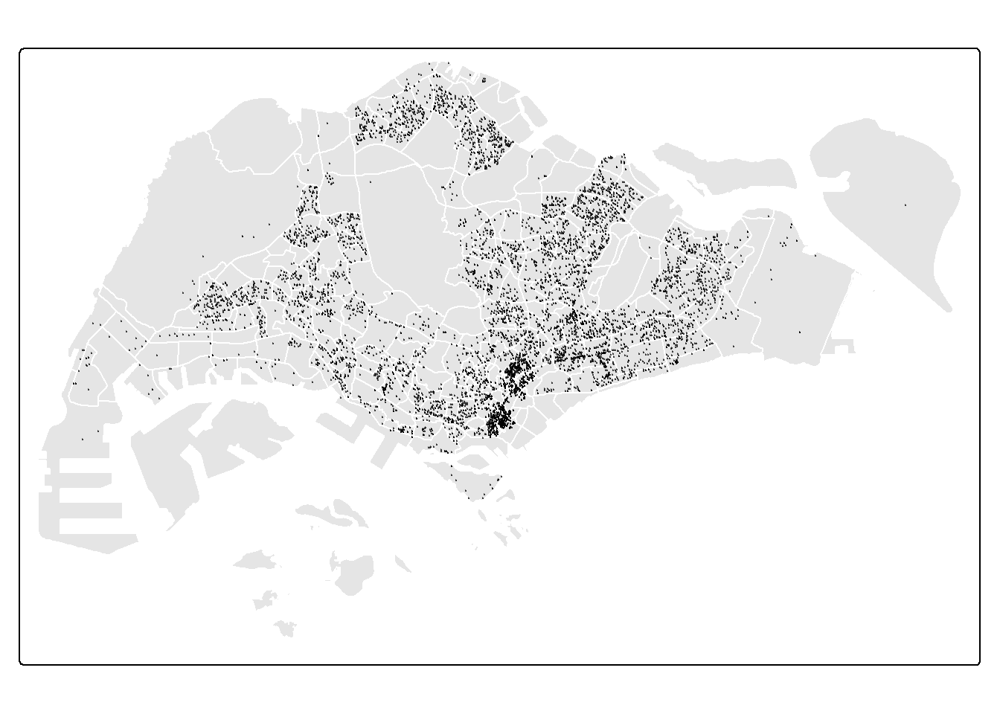
4.8 Removing unwanted planning areas
To avoid empty polygons biasing our maps and point-pattern statistics, we trim the study area to places that actually have registrations. Specifically, we:
- Keep planning areas with ≥ 1 geocoded point (computed from
biz_pts).
- Exclude NORTH-EASTERN ISLANDS on purpose (offshore, no relevant activity for our scope).
- Keep WESTERN ISLANDS because logistics/port activity is plausible.
- Filter both the polygon layer (
subzones_std → subzones_use) and the points (biz_pts → biz_pts_use) so subsequent joins and KDE/K-functions use a consistent window.
This reduces noise, speeds processing, and prevents intensity estimates from being diluted by large empty areas.
# Planning areas that have at least one point
keep_pa <- biz_pts |>
st_drop_geometry() |>
count(PLN_AREA_N, name = "n") |>
filter(n > 0) |>
pull(PLN_AREA_N)
subzones_use <- subzones_std |> filter(PLN_AREA_N %in% keep_pa)
subzones_use <- subzones_std |>
dplyr::filter(PLN_AREA_N %in% keep_pa,
PLN_AREA_N != "NORTH-EASTERN ISLANDS")
# also drop any biz points that lie in North-Eastern Islands,
# or that didn’t pick up a planning area for any reason.
biz_pts_use <- biz_pts |>
dplyr::filter(!is.na(PLN_AREA_N),
PLN_AREA_N != "NORTH-EASTERN ISLANDS")4.8.1 Map Check
tmap_mode("plot")
tm_shape(subzones_use) + tm_polygons(col = "grey90", border.col = "white") +
tm_shape(biz_pts) + tm_dots(size = 0.02, alpha = 0.5)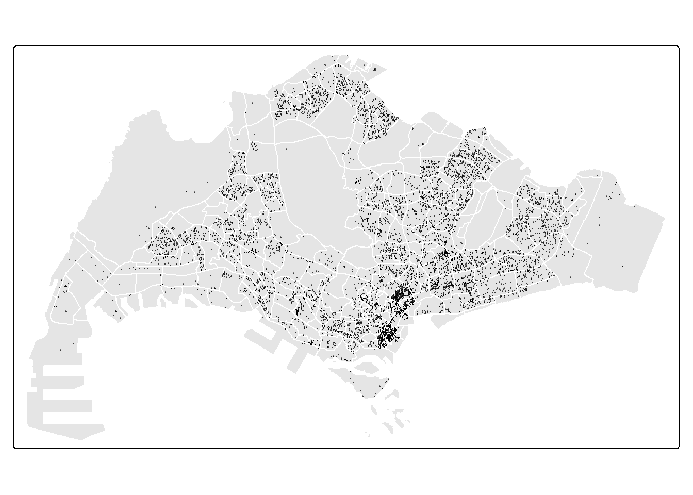
5 EDA
# Sector x Year counts
biz_pts_use |>
st_drop_geometry() |>
count(sector, year, name = "n") |>
arrange(sector, year)# A tibble: 6 × 3
sector year n
<chr> <dbl> <int>
1 F&B (56) 2024 3790
2 F&B (56) 2025 1965
3 IT (62) 2024 5844
4 IT (62) 2025 2895
5 Logistics/Warehousing (52) 2024 995
6 Logistics/Warehousing (52) 2025 7235.1 Top Planning Areas per sector
# Top Planning Areas per sector (top 10)
top_pa <- biz_pts_use |>
st_drop_geometry() |>
count(sector, PLN_AREA_N, name = "n") |>
group_by(sector) |>
slice_max(n, n = 10, with_ties = FALSE) |>
ungroup()
top_pa# A tibble: 30 × 3
sector PLN_AREA_N n
<chr> <chr> <int>
1 F&B (56) GEYLANG 526
2 F&B (56) DOWNTOWN CORE 362
3 F&B (56) KALLANG 294
4 F&B (56) WOODLANDS 287
5 F&B (56) OUTRAM 283
6 F&B (56) BEDOK 269
7 F&B (56) HOUGANG 254
8 F&B (56) SEMBAWANG 210
9 F&B (56) TOA PAYOH 210
10 F&B (56) YISHUN 209
# ℹ 20 more rows5.2 Subzone coverage check: how many subzones have ≥1 registration (by sector)
# all sector × subzone combinations in your study window
all_grid <- expand_grid(
sector = unique(biz_pts_use$sector),
SUBZONE_N = unique(subzones_use$SUBZONE_N)
)
# fill missing combos with n = 0, then compute has_any
subzone_cover <- biz_pts_use |>
st_drop_geometry() |>
count(sector, SUBZONE_N, name = "n") |>
right_join(all_grid, by = c("sector","SUBZONE_N")) |>
mutate(n = replace_na(n, 0), has_any = n > 0) |>
count(sector, has_any, name = "subzones") |>
tidyr::pivot_wider(names_from = has_any, values_from = subzones, values_fill = 0) |>
rename(`subzones_with_≥1` = `TRUE`, `subzones_with_0` = `FALSE`) |>
mutate(subzones_total = `subzones_with_≥1` + `subzones_with_0`) |>
select(sector, subzones_total, `subzones_with_≥1`, `subzones_with_0`) |>
arrange(sector)
subzone_cover# A tibble: 3 × 4
sector subzones_total `subzones_with_≥1` subzones_with_0
<chr> <int> <int> <int>
1 F&B (56) 319 278 41
2 IT (62) 319 260 59
3 Logistics/Warehousing (52) 319 202 117Headline: IT and Logistics appear to “peak” in the CBD due to registered-office addresses; Logistics relocates to industrial corridors and IT to business parks + town centres.
Policy insight:
- F&B: island-wide, population-following growth → watch malls/transport nodes.
- IT: concentrates in CBD + parks → plan flexible office stock near transit.
- Logistics: anchored to port/airport/expressways → reserve industrial land and manage last-mile interfaces with residential areas.
- F&B: island-wide, population-following growth → watch malls/transport nodes.
5.3 Choropleth:counts By Planning Area and Subzone
#Planning Area counts
pa_counts <- biz_pts_use |>
st_drop_geometry() |>
count(PLN_AREA_N, sector, name = "n")
subzones_pa <- subzones_use |>
distinct(PLN_AREA_N, .keep_all = TRUE) |>
left_join(pa_counts |>
group_by(PLN_AREA_N) |>
summarise(n_all = sum(n), .groups = "drop"),
by = "PLN_AREA_N")
# Build a single Singapore outline from your filtered subzones
sg_outline <- subzones_use |>
st_union() |> # dissolve to one geometry
st_make_valid() |>
st_as_sf() |>
mutate(name = "Singapore") # (dummy column just to keep an sf)
tmap_mode("plot")
tm_shape(subzones_pa) +
tm_polygons(
col = "n_all",
title = "Registrations (all sectors)",
style = "quantile", n = 5,
border.col = "grey30", border.lwd = 0.6
) +
tm_shape(sg_outline) +
tm_borders(col = "black", lwd = 1.2) + # <- country border
tm_layout(frame = FALSE)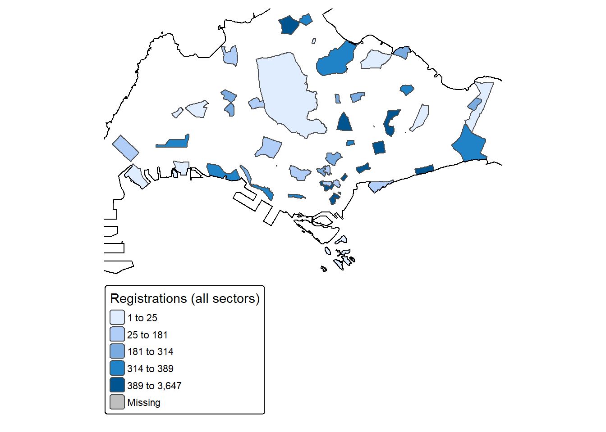
Darker shades indicate planning areas with higher counts of registered businesses.
- The strongest concentrations appear in Downtown Core, Geylang, and Kallang, reflecting both genuine activity and the prevalence of registered office addresses in the CBD.
- Peripheral industrial/logistics corridors (e.g., Jurong, Woodlands, Changi) also show elevated counts.
- Many heartland towns register moderate F&B and IT entries, highlighting the broad spatial reach of local services.
This baseline choropleth provides the starting point for intensity (KDE) and clustering (K/CSR) analyses in subsequent sections.
6 1st Order Spatio Temporal Analysis
Convert sf → owin and ppp
# Build polygonal window (country outline) from filtered subzones
W <- spatstat.geom::as.owin(st_union(subzones_use)) # SVY21 metres (EPSG:3414)
# Helper: convert an sf points subset to ppp in window W
to_ppp <- function(pts_sf) {
xy <- sf::st_coordinates(pts_sf)
spatstat.geom::ppp(x = xy[,1], y = xy[,2], window = W, check = FALSE)
}6.1 Clark–Evans test per sector
The Clark–Evans nearest-neighbour test evaluates whether business registrations are randomly distributed, clustered, or regularly spaced relative to Complete Spatial Randomness (CSR).
- Null hypothesis (H₀): The point pattern of business registrations follows CSR (i.e., randomly distributed).
- Alternative hypothesis (H₁): The point pattern is more clustered than CSR (R < 1).
We test this hypothesis for each selected sector (F&B, IT, Logistics/Warehousing) using both the asymptotic test and the Monte Carlo CSR simulation (999 realisations).
sectors <- unique(biz_pts_use$sector)
# Asymptotic (no CSR simulation)
ce_asym <- lapply(sectors, function(sec){
X <- to_ppp(biz_pts_use %>% filter(sector == sec))
z <- clarkevans.test(X, correction = "none", clipregion = W, alternative = "clustered")
tibble(sector = sec,
n = X$n,
R = unname(z$statistic),
p_value = z$p.value,
method = "Asymptotic (no CSR)")
}) %>% bind_rows()
# Monte Carlo against CSR (recommended for reporting)
set.seed(42)
ce_mc <- lapply(sectors, function(sec){
X <- to_ppp(biz_pts_use %>% filter(sector == sec))
z <- clarkevans.test(X, correction = "none", clipregion = W,
alternative = "clustered", method = "MonteCarlo", nsim = 999)
tibble(sector = sec,
n = X$n,
R = unname(z$statistic),
p_value = z$p.value,
method = "Monte Carlo (999 CSR sims)")
}) %>% bind_rows()
ce_results <- bind_rows(ce_asym, ce_mc) %>%
arrange(sector, method)
ce_resultsce_results# A tibble: 6 × 5
sector n R p_value method
<chr> <int> <dbl> <dbl> <chr>
1 F&B (56) 5755 0.365 0 Asymptotic (no CSR)
2 F&B (56) 5755 0.365 0.001 Monte Carlo (999 CSR sims)
3 IT (62) 8739 0.248 0 Asymptotic (no CSR)
4 IT (62) 8739 0.248 0.001 Monte Carlo (999 CSR sims)
5 Logistics/Warehousing (52) 1718 0.317 0 Asymptotic (no CSR)
6 Logistics/Warehousing (52) 1718 0.317 0.001 Monte Carlo (999 CSR sims)Clark–Evans nearest-neighbour test (window = Singapore outline, SVY21).
Across all sectors the Clark–Evans statistic (R) is below 1 and Monte-Carlo p-values are significant (()), indicating clustering relative to CSR at nearest-neighbour scale.
- IT (62): (R ), (p ) → strongest clustering. Likely reflects CBD/fringe-CBD registered-office addresses and business-park nodes (one-north, CBP).
- Logistics/Warehousing (52): (R ), (p ) → clear clustering, consistent with industrial land concentration near port/airport/expressways.
- F&B (56): (R ), (p ) → clustered but more diffuse than IT/Logistics, aligning with town-centre/mall/transit nodes spread island-wide.
Implications.
Nearest-neighbour distances are smaller than CSR expectations ( (R<1) ), so new registrations tend to occur near one another rather than randomly. This justifies: 1) mapping first-order intensity with KDE to locate hot spots, and
2) using K/CSR envelopes to see at which spatial ranges clustering persists beyond nearest neighbours.
6.2 Spatial Intensity of F&B (SSIC 56) Business Registrations
In this section, we compute and visualize the spatial intensity of F&B (SSIC 56) business registrations:
- Cache paths
- Create folders (
data/rds,data/rasters) to store intermediate results.
- This avoids re-running expensive computations every time the document is rendered.
- Data preparation
- F&B points are filtered from the master dataset (
biz_pts_use).
- Their coordinates are extracted and converted into a
pppobject (planar point pattern) using spatstat.
- The observation window
Wis already defined from the trimmed planning area polygons.
- Kernel Density Estimation (KDE)
- If a cached result exists, it is loaded.
- Otherwise, a suitable bandwidth is estimated with
bw.diggle, with safeguards (clamped between 300 m and 800 m).
- The KDE is then computed using a Gaussian kernel.
- The result is saved as an
.rdsfile for future use.
- Scaling and conversion
- The density is originally in units of points per m².
- Multiply by
1e6to rescale into points per km², a more interpretable measure.
- Convert the raster into a
SpatRasterwith the correct CRS (EPSG:3414).
- Saving outputs
- Save the raster as a GeoTIFF (.tif) so it can be reused in GIS software.
- Mapping
- Using tmap, render a choropleth of F&B intensity.
- Overlay planning area boundaries (thin white borders) and the outer municipal boundary (thicker black border).
- The legend title clearly states that values represent registrations per km².
# --- Always-available constants (paths) ---
rds_dir <- "data/rds"
rasters_dir <- "data/rasters"
dir.create(rds_dir, showWarnings = FALSE, recursive = TRUE)
dir.create(rasters_dir, showWarnings = FALSE, recursive = TRUE)
fnb_kde_rds <- file.path(rds_dir, "fnb_kde_im.rds")
fnb_bw_rds <- file.path(rds_dir, "fnb_bw.rds")
fnb_kde_tif <- file.path(rasters_dir, "fnb_kde_per_km2.tif")
# --- Ensure window and ppp exist (robust to earlier chunks being skipped) ---
if (!exists("subzones_use")) stop("subzones_use is missing; load/build it before this chunk.")
if (!exists("W")) {
W <- spatstat.geom::as.owin(sf::st_union(subzones_use))
}
if (!exists("biz_pts_use")) stop("biz_pts_use is missing; load/build it before this chunk.")
fnb_sf <- dplyr::filter(biz_pts_use, sector == "F&B (56)")
xy <- sf::st_coordinates(fnb_sf)
fnb_ppp <- spatstat.geom::ppp(x = xy[,1], y = xy[,2], window = W, check = FALSE)
# --- Load or compute KDE + bandwidth, and persist both ---
fnb_bw <- NA_real_
kde_im <- NULL
if (file.exists(fnb_kde_rds)) {
kde_im <- readRDS(fnb_kde_rds)
if (file.exists(fnb_bw_rds)) fnb_bw <- readRDS(fnb_bw_rds)
}
if (is.null(kde_im) || !is.numeric(fnb_bw) || is.na(fnb_bw)) {
# estimate & clamp bandwidth
h_est <- tryCatch(spatstat.explore::bw.diggle(fnb_ppp), error = function(e) 400)
h_est <- as.numeric(h_est)
fnb_bw <- min(max(h_est, 300), 800) # clamp 300–800 m
kde_im <- spatstat.explore::density.ppp(
fnb_ppp, sigma = fnb_bw, edge = TRUE, kernel = "gaussian"
)
saveRDS(kde_im, fnb_kde_rds)
saveRDS(fnb_bw, fnb_bw_rds)
}
# --- Scale to per km^2 and convert to SpatRaster with CRS ---
kde_im_km2 <- kde_im * 1e6
kde_r <- terra::rast(kde_im_km2)
terra::crs(kde_r) <- "EPSG:3414"
if (!file.exists(fnb_kde_tif)) terra::writeRaster(kde_r, fnb_kde_tif, overwrite = TRUE)
# --- (Optional) map directly ---
tmap_mode("plot")
tm_shape(kde_r) +
tm_raster(
col.scale = tm_scale_continuous(values = "Blues"),
col.legend = tm_legend(title = "F&B intensity\n(registrations per km²)")
) +
tm_shape(subzones_use) + tm_borders(col = "white", lwd = 0.3) +
tm_shape(sf::st_as_sf(sf::st_make_valid(sf::st_union(subzones_use)))) +
tm_borders(col = "black", lwd = 1.1) +
tm_layout(frame = FALSE)
Improving KDE Raster Interpretability
To improve the interpretability of the KDE raster and ensure consistency across sectors, we perform the following steps:
- Clamp and winsorize values
- Negative density values (possible from smoothing) are reset to zero.
- Extremely high values above the 99th percentile are capped.
- This reduces the influence of outliers and makes the colour scale more readable.
- Define consistent breaks
- Using the classInt package, compute six quantile-based breakpoints.
- These can be reused across sectors (e.g., IT services, Logistics) to keep maps directly comparable.
- Generate a cleaned raster
- Create a new raster (
kde_rw) with the adjusted values.
- Thematic mapping
- Plot the KDE with fixed breaks and a blue sequential palette.
- White borders show planning areas, and a thick black outline marks the overall study area.
- Place the legend outside the map for clarity.
# Clamp negatives, winsorize top tail for readability
vals <- terra::values(kde_r, mat = FALSE)
vals <- pmax(vals, 0)
cap <- as.numeric(quantile(vals, 0.99, na.rm = TRUE)) # 99th percentile cap
vals <- pmin(vals, cap)
kde_rw <- kde_r
terra::values(kde_rw) <- vals
# Pretty breaks (same set you can reuse for IT/Logistics for comparability)
library(classInt)
brks <- classInt::classIntervals(vals, n = 6, style = "quantile")$brks
tmap_mode("plot")
tm_shape(kde_rw) +
tm_raster(
style = "fixed", breaks = brks,
col.scale = tm_scale_continuous(values = "Blues"),
col.legend = tm_legend(title = "F&B intensity\n(registrations per km²)")
) +
tm_shape(subzones_use) + tm_borders(col = "white", lwd = 0.25) +
tm_shape(sf::st_as_sf(sf::st_make_valid(sf::st_union(subzones_use)))) +
tm_borders(col = "black", lwd = 1.0) +
tm_layout(frame = FALSE, component.autoscale = FALSE, legend.outside = TRUE)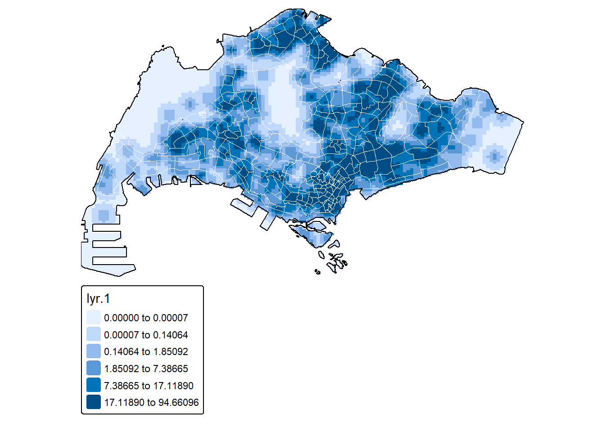
F&B business registrations, KDE (Jan 2024–Jun 2025). Intensities shown as registrations per km².Bandwidth = 300 m.. The surface is zero-clamped and capped at the 99th percentile to enhance mid-range readability. Hot spots cluster around CBD/fringe-CBD and town-centre nodes; diffuse background reflects island-wide service presence.
6.2.1 Descriptive Statistics for the F&B KDE Surface
This section generates descriptive statistics for the F&B KDE surface:
Bandwidth retrieval:
The smoothing bandwidth used in KDE (fnb_bw) is loaded from cache if available, otherwise recomputed withbw.diggleand clamped between 300–800 m for stability.Raster values:
Raw cell values from the KDE raster (kde_r, in registrations per km²) are extracted. Missing values are removed and any small negatives are clamped to zero.Summary statistics:
From these values, we calculate:- total number of F&B points (
n),
- bandwidth (m),
- mean and median intensity,
- 90th and 99th percentile intensities,
- maximum intensity.
- total number of F&B points (
Output table:
Results are organized into a tidytibblewith two columns (metric,value), making them easy to render in the report.
#| label: fnb-kde-stats
# Uses the raster you mapped (kde_r = per km²). We clamp small negatives to 0.
# bandwidth (prefer the cached fnb_bw; fall back to recompute & clamp)
if (!exists("fnb_bw") || !is.numeric(fnb_bw) || is.na(fnb_bw)) {
fnb_bw_path <- file.path("data", "rds", "fnb_bw.rds")
if (file.exists(fnb_bw_path)) {
fnb_bw <- readRDS(fnb_bw_path)
} else {
h_est <- tryCatch(spatstat.explore::bw.diggle(fnb_ppp), error = function(e) NA_real_)
fnb_bw <- if (is.na(h_est)) NA_real_ else min(max(as.numeric(h_est), 300), 800)
}
}
# raster values
vals_raw <- terra::values(kde_r, mat = FALSE)
vals <- vals_raw[!is.na(vals_raw)]
vals <- pmax(vals, 0) # clamp negatives
# stats
fnb_n <- fnb_ppp$n
fnb_mean <- mean(vals)
fnb_median <- median(vals)
fnb_p90 <- as.numeric(quantile(vals, 0.90))
fnb_p99 <- as.numeric(quantile(vals, 0.99))
fnb_max <- max(vals)
# summary table
tibble::tibble(
metric = c("Points (n)", "Bandwidth (m)", "Mean", "Median", "P90", "P99", "Max"),
value = c(fnb_n,
ifelse(is.na(fnb_bw), NA, round(fnb_bw,0)),
round(fnb_mean,2),
round(fnb_median,2),
round(fnb_p90,2),
round(fnb_p99,2),
round(fnb_max,2))
)# A tibble: 7 × 2
metric value
<chr> <dbl>
1 Points (n) 5755
2 Bandwidth (m) 300
3 Mean 9.02
4 Median 1.85
5 P90 23.4
6 P99 94.7
7 Max 306. 6.2.2 F&B (SSIC 56) – KDE Summary (Jan 2024–Jun 2025)
The kernel density estimation (KDE) of F&B registrations (n = 5,755) reveals strong clustering around the CBD, fringe-CBD, and major town-centre nodes. The median intensity is 1.85 registrations/km², while the mean is higher (9.02/km²) due to concentrated hotspots. The upper tail is steep: the 90th percentile reaches 23.5/km², the 99th percentile 94.7/km², and the maximum exceeds 305/km². This indicates a few very dense commercial zones embedded within an otherwise broad, diffuse service distribution. The map highlights downtown areas (e.g., Raffles Place, Orchard, Bugis) alongside regional hubs such as Tampines and Jurong as consistent hotspots. In contrast, outer residential areas exhibit light, evenly spread presence, consistent with population-driven demand. Overall, the KDE confirms that F&B businesses form clustered yet island-wide patterns, with strong concentration in high-footfall districts and a long tail of moderate background service intensity across Singapore.
6.3 Spatial Intensity of IT Services (SSIC 62) Business Registrations
This helper chunk sets up shared resources and utility functions for kernel density estimation (KDE):
Directory setup: Defines data/rds and data/rasters as cache locations, creating them if they don’t exist. These folders store RDS objects (intermediate results) and raster files (GeoTIFFs).
Analysis window: Ensures the spatial observation window W exists, created from the union of planning area polygons (subzones_use). This window defines the study area for point pattern analysis.
Breakpoints for comparability: Loads a set of fixed class breaks (kde_breaks_6.rds) that were saved from the F&B analysis. These breaks will be reused across sectors so that KDE maps are directly comparable.
Utility functions:
make_ppp(sf_pts, W): converts an sf point object into a ppp (planar point pattern) object within the window W.
compute_kde_cached(ppp_obj, rds_im, rds_bw): computes a Gaussian KDE for the given point pattern. If cached raster (im) and bandwidth (bw) exist, they are loaded; otherwise, a new bandwidth is estimated (bw.diggle, clamped between 300–800 m), KDE computed, and results saved.
to_raster_km2(im): converts a spatstat image into a SpatRaster, scaling values from per m² to per km² and assigning the correct CRS (EPSG:3414).
rds_dir <- "data/rds"
rasters_dir <- "data/rasters"
dir.create(rds_dir, showWarnings = FALSE, recursive = TRUE)
dir.create(rasters_dir, showWarnings = FALSE, recursive = TRUE)
# Ensure analysis window exists
if (!exists("W")) W <- spatstat.geom::as.owin(sf::st_union(subzones_use))
# Load the fixed breaks saved from the F&B map
brks_path <- file.path(rds_dir, "kde_breaks_6.rds")
stopifnot(file.exists(brks_path)) # ensure F&B saved these earlier
brks <- readRDS(brks_path)
# Small utilities
make_ppp <- function(sf_pts, W){
xy <- sf::st_coordinates(sf_pts)
spatstat.geom::ppp(xy[,1], xy[,2], window = W, check = FALSE)
}
compute_kde_cached <- function(ppp_obj, rds_im, rds_bw, sigma_min = 300, sigma_max = 800){
if (file.exists(rds_im) && file.exists(rds_bw)) {
list(im = readRDS(rds_im), bw = readRDS(rds_bw))
} else {
h_est <- tryCatch(spatstat.explore::bw.diggle(ppp_obj), error = function(e) 400)
bw <- min(max(as.numeric(h_est), sigma_min), sigma_max)
im <- spatstat.explore::density.ppp(ppp_obj, sigma = bw, edge = TRUE, kernel = "gaussian")
saveRDS(im, rds_im); saveRDS(bw, rds_bw)
list(im = im, bw = bw)
}
}
to_raster_km2 <- function(im){
r <- terra::rast(im * 1e6) # per m^2 -> per km^2
terra::crs(r) <- "EPSG:3414"
r
}This block reproduces the KDE workflow for the IT (SSIC 62) sector and plots it on the same scale as F&B for apples-to-apples comparison.
File paths:
Sets RDS/GeoTIFF cache targets for the IT KDE image (it_kde_im.rds), bandwidth (it_bw.rds), and raster (it_kde_per_km2.tif).Point pattern setup:
Filters IT registrations frombiz_pts_use, converts them to apppobject within the study windowWviamake_ppp().KDE with caching:
compute_kde_cached()loads precomputed KDE + bandwidth if present; otherwise it estimates bandwidth (Diggle, clamped 300–800 m), computes a Gaussian KDE, and caches both.
to_raster_km2()converts the KDE image to aSpatRasterand rescales units to registrations per km².
- The raster is written once as a GeoTIFF for reuse.
Value cleaning (no winsorizing):
Negative cells are clamped to zero to remove smoothing artefacts. Unlike F&B, no top-tail winsorizing is applied here, because we will reuse the fixed breaks saved from F&B (brks) for strict comparability.Mapping with shared breaks:
Plots the cleaned IT raster usingstyle = "fixed"+breaks = brks(the exact class limits from F&B), a blue sequential scale, white subzone borders, and a black outer boundary.
The legend sits outside for clarity.
it_im_rds <- file.path(rds_dir, "it_kde_im.rds")
it_bw_rds <- file.path(rds_dir, "it_bw.rds")
it_tif <- file.path(rasters_dir, "it_kde_per_km2.tif")
# Build ppp
it_sf <- dplyr::filter(biz_pts_use, sector == "IT (62)")
it_ppp <- make_ppp(it_sf, W)
# KDE (load/compute), convert to per-km^2 raster, save GeoTIFF (first time)
it_kde <- compute_kde_cached(it_ppp, it_im_rds, it_bw_rds)
it_r <- to_raster_km2(it_kde$im)
if (!file.exists(it_tif)) terra::writeRaster(it_r, it_tif, overwrite = TRUE)
# Clean negatives (don’t winsorize so we keep common breaks from F&B)
vals <- pmax(terra::values(it_r, mat = FALSE), 0)
it_rw <- it_r; terra::values(it_rw) <- vals
# Plot with the SAME breaks as F&B
tmap_mode("plot")
tm_shape(it_rw) +
tm_raster(
style = "fixed", breaks = brks,
col.scale = tm_scale_continuous(values = "Blues"),
col.legend = tm_legend(title = "IT intensity\n(registrations per km²)")
) +
tm_shape(subzones_use) + tm_borders(col = "white", lwd = 0.25) +
tm_shape(sf::st_as_sf(sf::st_make_valid(sf::st_union(subzones_use)))) +
tm_borders(col = "black", lwd = 1.0) +
tm_layout(frame = FALSE, component.autoscale = FALSE, legend.outside = TRUE)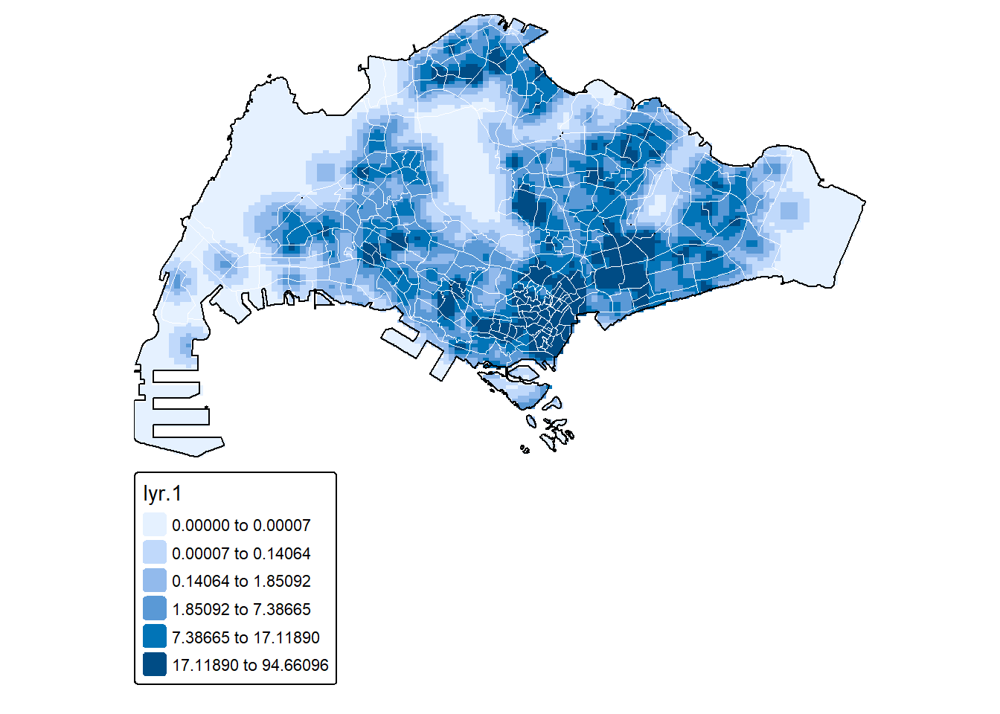
6.3.1 Descriptive Statistics for the IT KDE Surface
This block computes summary statistics for the IT (SSIC 62) KDE surface:
Bandwidth retrieval:
Loads the cached bandwidth (it_bw.rds) if available; otherwise sets it toNA.
This is the smoothing parameter used when computing the KDE.Raster values:
Extracts intensity values (registrations per km²) from the IT raster (it_r).
Missing values are removed, and small negative values (artefacts from smoothing) are clamped to zero.Statistical measures:
From these cleaned values, the code computes:- Points (
n): number of IT registrations in the point pattern,
- Bandwidth (m): smoothing bandwidth,
- Mean and Median intensity,
- P90 and P99: the 90th and 99th percentile intensities,
- Max: maximum observed intensity value.
- Points (
Tidy output:
Assembles all results into atibblewith three columns:sector(always “IT (62)” here),
metric(name of the statistic),
value(calculated numeric result, rounded for readability).
# Bandwidth: use cached value if available
it_bw_path <- file.path(rds_dir, "it_bw.rds")
it_bw <- if (file.exists(it_bw_path)) readRDS(it_bw_path) else NA_real_
# Raster values (per km^2); clamp tiny negatives to zero
vals_raw <- terra::values(it_r, mat = FALSE)
vals <- pmax(vals_raw[!is.na(vals_raw)], 0)
# Stats
it_n <- it_ppp$n
it_mean <- mean(vals)
it_median <- median(vals)
it_p90 <- as.numeric(quantile(vals, 0.90))
it_p99 <- as.numeric(quantile(vals, 0.99))
it_max <- max(vals)
# Tidy table
it_stats <- tibble::tibble(
sector = "IT (62)",
metric = c("Points (n)", "Bandwidth (m)", "Mean", "Median", "P90", "P99", "Max"),
value = c(it_n,
ifelse(is.na(it_bw), NA, round(it_bw,0)),
round(it_mean,2),
round(it_median,2),
round(it_p90,2),
round(it_p99,2),
round(it_max,2))
)
it_stats# A tibble: 7 × 3
sector metric value
<chr> <chr> <dbl>
1 IT (62) Points (n) 8739
2 IT (62) Bandwidth (m) 300
3 IT (62) Mean 13.7
4 IT (62) Median 1.03
5 IT (62) P90 16.9
6 IT (62) P99 219.
7 IT (62) Max 2352. 6.3.2 IT Services (SSIC 62) – KDE Summary (Jan 2024–Jun 2025)
The kernel density estimation (KDE) of IT services registrations (n = 8,739) shows a broad and highly diffuse spatial footprint, with hotspots concentrated in business and mixed-use zones. The chosen bandwidth (300 m) highlights dense clusters while retaining local variation. The median intensity is low at 1.03 registrations/km², but the mean rises to 13.7/km², reflecting the influence of high-density nodes. The upper tail is heavy: the 90th percentile reaches 16.9/km², the 99th percentile surges to 219/km², and the maximum exceeds 2,350/km². These figures indicate that while most of the island experiences modest IT business presence, a few concentrated commercial zones (notably CBD, One-North, and regional hubs like Tampines and Jurong East) dominate the distribution. Compared to F&B, IT services exhibit wider dispersal across industrial estates and mixed-use clusters, consistent with the sector’s reliance on both centralised office hubs and distributed business parks.
6.4 Spatial Intensity of Logistics Services (SSIC 52) Business Registrations
This block repeats the KDE workflow for Logistics/Warehousing (SSIC 52) and renders it on the same scale as F&B/IT for strict cross-sector comparison.
Cache paths:
Defines where to store/load the KDE image (log_kde_im.rds), the chosen bandwidth (log_bw.rds), and the exported GeoTIFF (log_kde_per_km2.tif).Point pattern:
Filters Logistics/Warehousing registrations frombiz_pts_use, then converts them to apppobject within the study windowWusingmake_ppp().KDE with caching + export:
compute_kde_cached()loads an existing KDE and bandwidth if present; otherwise it estimates bandwidth (Diggle, clamped 300–800 m), computes a Gaussian KDE, and saves both.
to_raster_km2()converts the KDE to aSpatRasterand rescales units to registrations per km².
- The raster is written once to GeoTIFF for reuse.
Value cleanup (no winsorizing):
Negative artefacts from smoothing are clamped to zero; no upper-tail capping here so we can directly reuse common class breaks.Mapping with shared breaks:
Plots the cleaned Logistics raster usingstyle = "fixed"+breaks = brks— the exact breakpoints saved from the F&B map.- Identical colours mean identical intensity ranges across sectors.
- Adds white subzone borders, a black outer boundary, and an outside legend for readability.
- Identical colours mean identical intensity ranges across sectors.
log_im_rds <- file.path(rds_dir, "log_kde_im.rds")
log_bw_rds <- file.path(rds_dir, "log_bw.rds")
log_tif <- file.path(rasters_dir, "log_kde_per_km2.tif")
# Build ppp
log_sf <- dplyr::filter(biz_pts_use, sector == "Logistics/Warehousing (52)")
log_ppp <- make_ppp(log_sf, W)
# KDE (load/compute), convert to per-km^2 raster, save GeoTIFF (first time)
log_kde <- compute_kde_cached(log_ppp, log_im_rds, log_bw_rds)
log_r <- to_raster_km2(log_kde$im)
if (!file.exists(log_tif)) terra::writeRaster(log_r, log_tif, overwrite = TRUE)
# Clean negatives; keep common breaks from F&B
vals <- pmax(terra::values(log_r, mat = FALSE), 0)
log_rw <- log_r; terra::values(log_rw) <- vals
# Plot with the SAME breaks as F&B
tmap_mode("plot")
tm_shape(log_rw) +
tm_raster(
style = "fixed", breaks = brks,
col.scale = tm_scale_continuous(values = "Blues"),
col.legend = tm_legend(title = "Logistics intensity\n(registrations per km²)")
) +
tm_shape(subzones_use) + tm_borders(col = "white", lwd = 0.25) +
tm_shape(sf::st_as_sf(sf::st_make_valid(sf::st_union(subzones_use)))) +
tm_borders(col = "black", lwd = 1.0) +
tm_layout(frame = FALSE, component.autoscale = FALSE, legend.outside = TRUE)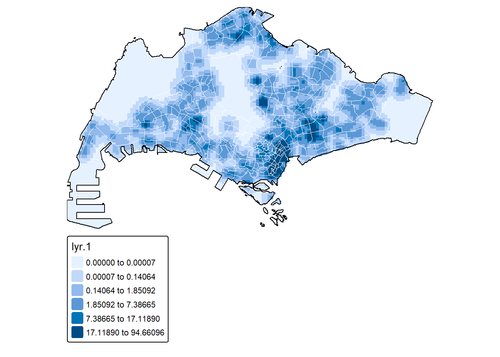
6.4.1 Descriptive Statistics for the Logistics KDE Surface
This chunk produces a numerical summary for the Logistics/Warehousing (SSIC 52) KDE:
Bandwidth retrieval:
Looks for a cached KDE bandwidth atdata/rds/log_bw.rds.
If found, loads it intolog_bw; otherwise setsNA.
The bandwidth is the smoothing parameter used when computing the KDE.Raster values (per km²):
Extracts cell values from the Logistics raster (log_r), dropsNAs, and clamps any tiny negative artefacts to zero (pmax).Summary statistics:
Computes:- Points (
n): number of Logistics points used (log_ppp$n),
- Bandwidth (m): cached/loaded bandwidth (rounded),
- Mean, Median KDE intensity,
- P90, P99: 90th and 99th percentile intensities,
- Max: maximum intensity value.
- Points (
Tidy table output:
Packs results into atibblewith columns:sector= “Logistics/Warehousing (52)”,
metric= statistic name,
value= numeric result (rounded for readability).
Printing
log_statsdisplays the table in the document.# Bandwidth: use cached value if available log_bw_path <- file.path(rds_dir, "log_bw.rds") log_bw <- if (file.exists(log_bw_path)) readRDS(log_bw_path) else NA_real_ # Raster values (per km^2); clamp tiny negatives to zero vals_raw <- terra::values(log_r, mat = FALSE) vals <- pmax(vals_raw[!is.na(vals_raw)], 0) # Stats log_n <- log_ppp$n log_mean <- mean(vals) log_median <- median(vals) log_p90 <- as.numeric(quantile(vals, 0.90)) log_p99 <- as.numeric(quantile(vals, 0.99)) log_max <- max(vals) # Tidy table log_stats <- tibble::tibble( sector = "Logistics/Warehousing (52)", metric = c("Points (n)", "Bandwidth (m)", "Mean", "Median", "P90", "P99", "Max"), value = c(log_n, ifelse(is.na(log_bw), NA, round(log_bw,0)), round(log_mean,2), round(log_median,2), round(log_p90,2), round(log_p99,2), round(log_max,2)) ) log_stats# A tibble: 7 × 3 sector metric value <chr> <chr> <dbl> 1 Logistics/Warehousing (52) Points (n) 1718 2 Logistics/Warehousing (52) Bandwidth (m) 300 3 Logistics/Warehousing (52) Mean 2.69 4 Logistics/Warehousing (52) Median 0.14 5 Logistics/Warehousing (52) P90 5.5 6 Logistics/Warehousing (52) P99 41.6 7 Logistics/Warehousing (52) Max 238.
6.4.2 Logistics/Warehousing (SSIC 52) – KDE Summary (Jan 2024–Jun 2025)
The KDE of Logistics/Warehousing registrations (n = 1,718) highlights a sparse but spatially meaningful distribution. The median intensity is just 0.14 registrations/km², while the mean is moderately higher at 2.69/km², indicating a long-tailed distribution. High-intensity clusters are rare but notable: the 90th percentile reaches 5.5/km², the 99th percentile 41.7/km², and the maximum exceeds 237/km², reflecting concentrated warehousing activity in specific industrial zones. Spatially, hotspots align with Singapore’s established logistics corridors — the western region around Jurong and Tuas, port-related areas, and select eastern nodes near Changi Airport. In contrast, residential and central business districts show minimal activity, consistent with land-use zoning. The map confirms a sector shaped strongly by infrastructure access and industrial planning, producing highly localized clusters of intense activity embedded within an otherwise low-density national backdrop.
6.5 Spatio Temporal KDE
6.5.1 Helpers (bandwidths, weights, KDE + caching)
This block sets up monthly spatio-temporal KDE helpers that produce per-sector rasters with spatial smoothing (meters) and temporal Gaussian weights (days), with caching. Bandwidth & Weights - get_sigma_m(ppp_obj, clamp=c(300,800)): estimates spatial KDE bandwidth via bw.diggle; coerces to numeric, defaults to 400 if failed, then clamps to 300–800 m for stability.
- time_weights(dates, t_center, tau_days=60): computes Gaussian temporal weights around a month center; normalizes weights to mean 1 so KDE magnitudes are comparable across months.
Building Inputs - ppp_for_sector(sector_name): filters biz_pts_use by sector, converts to ppp within w, and attaches reg_date as an attribute (used to derive temporal weights).
Monthly ST-KDE with Caching - stkde_month_slice(sector_name, t_center, sigma_m, tau_days=60, overwrite_tif=FALSE):
- Creates a month tag (YYYY-MM), derives cache file paths (stkde_<sector>_<YYYY-MM>.rds/.tif).
- Loads cached GeoTIFF/RDS if present (unless overwrite_tif=TRUE).
- Otherwise:
- Builds X (ppp) and pulls attached reg_date.
- Computes temporal weights for that month (tau_days = temporal bandwidth).
- Runs weighted spatial KDE:
r density.ppp(X, sigma=sigma_m, edge=TRUE, kernel="gaussian", weights=w) - Saves the im (spatstat image) as RDS.
- Converts to per km² SpatRaster (* 1e6), clamps negatives to 0, sets CRS EPSG:3414, writes GeoTIFF, and returns the raster.
# Ensure folders
rds_dir <- "data/rds"
rasters_dir <- "data/rasters"
dir.create(rds_dir, showWarnings = FALSE, recursive = TRUE)
dir.create(rasters_dir, showWarnings = FALSE, recursive = TRUE)
# Ensure window W
if (!exists("W")) W <- spatstat.geom::as.owin(sf::st_union(subzones_use))
# Sectors you already defined
targets <- tibble::tibble(
ssic2 = c("56", "62", "52"),
sector = c("F&B (56)", "IT (62)", "Logistics/Warehousing (52)")
)
# -------- Spatial bandwidth (per sector) with clamps --------
get_sigma_m <- function(ppp_obj, clamp = c(300, 800)){
h <- tryCatch(spatstat.explore::bw.diggle(ppp_obj), error = function(e) NA_real_)
h <- suppressWarnings(as.numeric(h))
if (!is.finite(h)) h <- 400
pmax(clamp[1], pmin(h, clamp[2]))
}
# -------- Temporal Gaussian weights (days) --------
# tau_days = temporal bandwidth (std dev) in days, e.g. 45–60
time_weights <- function(dates, t_center, tau_days = 60){
dt <- as.numeric(dates - t_center)
w <- exp(-0.5 * (dt / tau_days)^2)
# Normalize to mean 1 (keeps magnitudes comparable across months)
if (mean(w) > 0) w <- w / mean(w)
w
}
# -------- Build sector ppp with attributes --------
ppp_for_sector <- function(sector_name){
pts <- dplyr::filter(biz_pts_use, sector == sector_name)
xy <- sf::st_coordinates(pts)
X <- spatstat.geom::ppp(xy[,1], xy[,2], window = W, check = FALSE)
# Attach attributes for time weights
attr(X, "reg_date") <- pts$reg_date
X
}
# -------- Spatial KDE with temporal smoothing (weighted) + caching --------
# Returns a SpatRaster in registrations per km^2
stkde_month_slice <- function(sector_name, t_center, sigma_m, tau_days = 60,
overwrite_tif = FALSE){
mon_tag <- format(t_center, "%Y-%m") # YYYY-MM
base <- paste0(gsub("\\W","_", sector_name), "_", mon_tag)
r_rds <- file.path(rds_dir, paste0("stkde_", base, ".rds"))
r_tif <- file.path(rasters_dir, paste0("stkde_", base, ".tif"))
# If cached raster exists, load & return
if (file.exists(r_tif) && !overwrite_tif) {
r <- terra::rast(r_tif); return(r)
}
if (file.exists(r_rds) && !overwrite_tif) {
im <- readRDS(r_rds)
} else {
X <- ppp_for_sector(sector_name)
dates <- attr(X, "reg_date")
stopifnot(inherits(dates, "Date"))
# Temporal weights for this month
w <- time_weights(dates, t_center = t_center, tau_days = tau_days)
# Spatial KDE with Gaussian kernel + edge correction + weights
im <- spatstat.explore::density.ppp(
X, sigma = sigma_m, edge = TRUE, kernel = "gaussian", weights = w
)
saveRDS(im, r_rds)
}
# Convert to per km^2 raster, clamp small negatives to 0
r <- terra::rast(im * 1e6); terra::crs(r) <- "EPSG:3414"
vals <- terra::values(r, mat = FALSE)
vals <- pmax(vals, 0)
terra::values(r) <- vals
terra::writeRaster(r, r_tif, overwrite = TRUE)
r
}6.5.2 Define the month grid and sector bandwidths
The code chunk below helps us define the following Month centers
- months_vec: mid-month dates from 15 Jan 2024 → 15 Jun 2025 (interval = 1 month).
- Used as temporal centers for Gaussian time weights.
Sector point patterns & bandwidths
- sector_ppp: list to store sector-wise ppp objects (F&B, IT, Logistics).
- sector_bw: numeric vector to store each sector’s optimal spatial bandwidth.
Loop over sectors (targets$sector)
1. ppp_for_sector(sec) → builds point pattern with registration dates.
2. Store in sector_ppp.
3. get_sigma_m(X, clamp=c(300,800)) → computes Diggle bandwidth (300–800 m), stored in sector_bw.
Output
- sector_bw = chosen bandwidths per sector, reused across all monthly KDE runs.
# Month centers (use mid-month for smoothing target)
months_vec <- seq(as.Date("2024-01-15"), as.Date("2025-06-15"), by = "1 month")
# Build ppp for each sector once, get spatial bandwidths
sector_ppp <- setNames(vector("list", length(targets$sector)), targets$sector)
sector_bw <- setNames(numeric(length(targets$sector)), targets$sector)
for (sec in targets$sector) {
X <- ppp_for_sector(sec)
sector_ppp[[sec]] <- X
sector_bw[[sec]] <- get_sigma_m(X, clamp = c(300, 800))
}
sector_bw F&B (56) IT (62)
300 300
Logistics/Warehousing (52)
300 6.5.3 Run ST-KDE (monthly slices) for all sectors
This block runs the monthly spatio-temporal KDE for each sector. It loops over all sectors and months, applying stkde_month_slice() with sector-specific bandwidths and a temporal smoothing window (tau_days = 60), returning cached SpatRaster intensity maps for each sector–month combination.
# Choose temporal bandwidth (days). 60 ~ two months std dev → smooths but keeps seasonality.
tau_days <- 60
# Compute & cache every sector × month; returns list of lists of SpatRasters
stkde_all <- lapply(targets$sector, function(sec){
sigma_m <- sector_bw[[sec]]
lapply(months_vec, function(t0){
stkde_month_slice(sec, t_center = t0, sigma_m = sigma_m, tau_days = tau_days)
})
})
names(stkde_all) <- targets$sector6.5.5 Faceted map for a chosen semester (e.g., 2025-Jan → 2025-Jun)
Helper function to create faceted monthly maps of spatio-temporal KDE intensity for a chosen semester (default: Jan–Jun 2025).
Process
- Inputs: sector name, start and end dates.
- Subset months: select indices of months_vec within the semester, extract KDE rasters from stkde_all.
- Singapore outline: build boundary polygon for clean framing.
- Map creation (per month)
- Plot raster with fixed breaks (brks6) → ensures comparability across months.
- Add subzone borders (thin white) + outer boundary (black).
- Title with sector + month; legend only on first map.
- Faceting: combine monthly maps side-by-side using tmap_arrange() (3 columns).
brks6 <- readRDS(file.path(rds_dir, "stkde_month_breaks6.rds"))
plot_semester <- function(sec, start = as.Date("2025-01-01"), end = as.Date("2025-06-30")){
idx <- which(months_vec >= start & months_vec <= end)
rlist <- stkde_all[[sec]][idx]
# Build a small sf outline for nice border
sg_outline <- subzones_use |> sf::st_union() |> sf::st_make_valid() |> sf::st_as_sf()
# tmap: one facet per month
tmaps <- lapply(seq_along(rlist), function(i){
mon_lab <- format(months_vec[idx][i], "%b %Y")
tm_shape(rlist[[i]]) +
tm_raster(
style = "fixed", breaks = brks6,
col.scale = tm_scale_continuous(values = "Blues"),
col.legend = tm_legend(title = "Intensity\n(registrations per km²)")
) +
tm_shape(subzones_use) + tm_borders(col = "white", lwd = 0.25) +
tm_shape(sg_outline) + tm_borders(col = "black", lwd = 1.0) +
tm_layout(title = paste0(sec, " — ", mon_lab),
legend.show = i == 1, # show once
frame = FALSE)
})
tmap::tmap_arrange(plotlist = tmaps, ncol = 3)
}6.5.6 F&B
# produce 2x3 panels for each sector (Jan–Jun 2025)
tmap_mode("plot")
plot_semester("F&B (56)")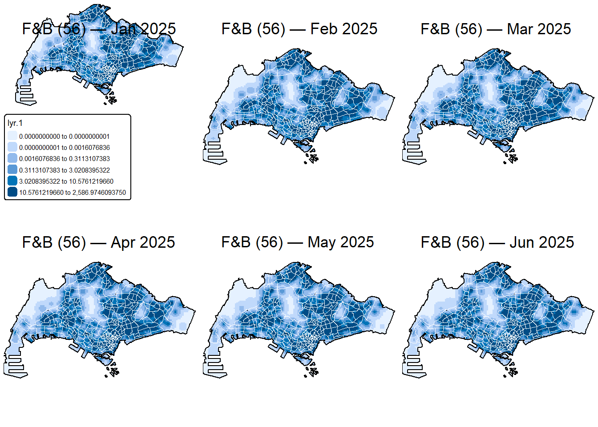
#plot_semester("IT (62)")
#plot_semester("Logistics/Warehousing (52)")Hotspots are stable and transit-anchored: CBD/fringe-CBD, Orchard–River Valley, Bugis/Kallang, and eastern mall corridors persist across months. Secondary clusters recur around Tampines, Jurong East/West, and Woodlands, consistent with regional centres. Month-to-month variation is modest; February–March show broader, lighter halos (holiday/lease effects), while Apr–Jun tighten around core retail strips, suggesting post-holiday normalization. The north-east (Hougang–Sengkang–Punggol) shows a thin, steady band—diffuse neighbourhood demand rather than single nodes. Western industrial edges remain comparatively cool except at mixed-use interfaces. Overall, F&B registrations behave as neighbourhood-scale agglomerations that track malls/MRT interchanges: intensity breathes slightly by month but the urban structure dominates. Planning focus: manage curb/servicing and pedestrian flow within ≤800 m of these recurring nodes; monitor saturation in CBD and major town centres, while supporting micro-clusters in heartlands to maintain accessibility.
6.5.7 IT
# produce 2x3 panels for each sector (Jan–Jun 2025)
tmap_mode("plot")
#plot_semester("F&B (56)")
plot_semester("IT (62)")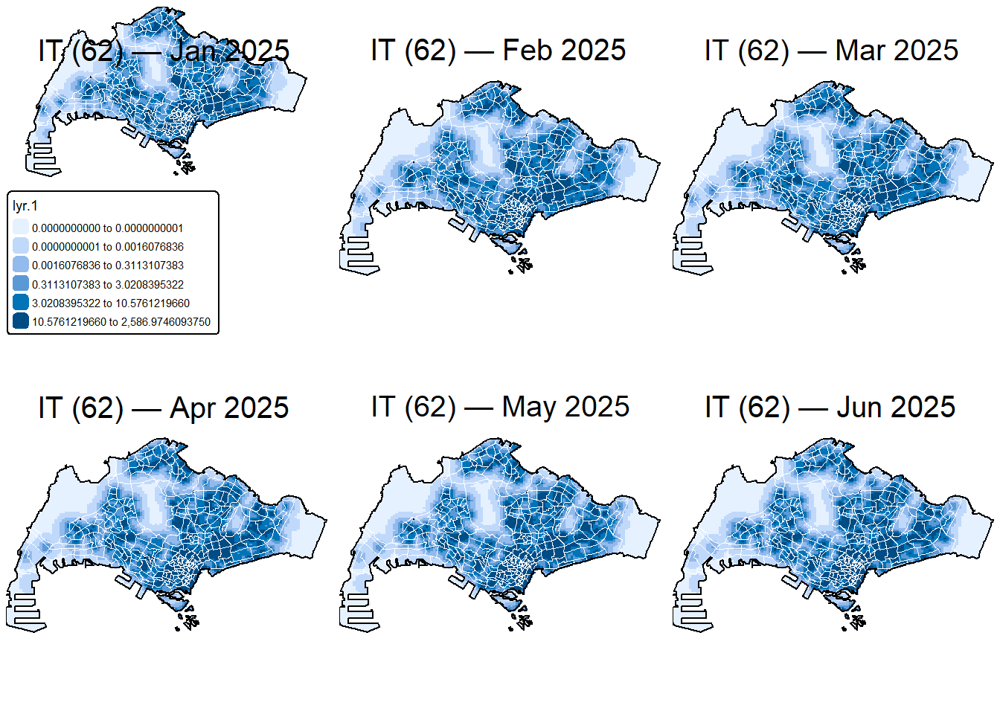
#plot_semester("Logistics/Warehousing (52)")IT registrations show a stable core–fringe pattern anchored on the CBD with persistent secondary peaks at one-north/Buona Vista, Changi Business Park, and regional hubs (Tampines, Jurong East). A thin, island-wide “film” indicates diffuse, small intensities along mixed-use corridors; hotspots consistently hug MRT-served office estates. Month-to-month changes are modest: Feb–Mar display slightly broader halos (batch incorporations/lease cycles), while Apr–Jun tighten around estate nuclei, suggesting post-cycle consolidation rather than spread. North-east new towns show light, continuous presence (home-office/SME addresses) but no dominant node. The spatial structure is therefore ecosystem-driven (towers, parks, coworking) more than neighbourhood retail. Planning notes: safeguard flexible office stock and grade-A/B1 spaces near rapid transit; streamline fit-out/ICT permits on a quarterly cadence; and factor the registered-office effect when interpreting CBD intensity versus true operational footprints.
6.5.8 Logistics
# produce 2x3 panels for each sector (Jan–Jun 2025)
tmap_mode("plot")
#plot_semester("F&B (56)")
#plot_semester("IT (62)")
plot_semester("Logistics/Warehousing (52)")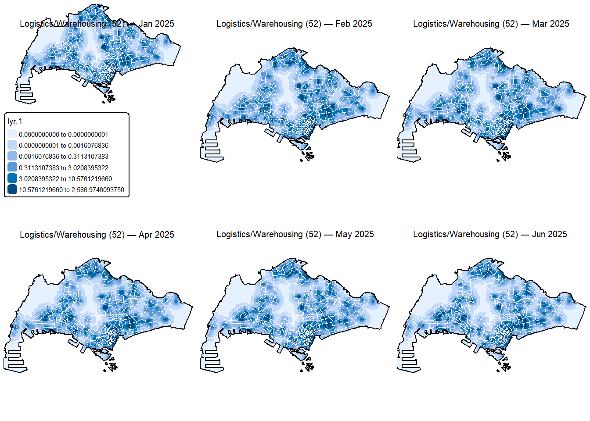
Intensity is estate-anchored and highly stable. Recurring hotspots align with the western logistics corridor (Jurong/Tuas–Pioneer along AYE/PIE), northern estates (Sungei Kadut/Woodlands), and the Changi axis (Airport Logistics Park, Loyang/Changi North). Thin ribbons trace expressway spurs and freight approaches; residential cores remain cool, confirming zoning separation. Month-to-month change is limited: Feb–Mar show slightly broader halos (batch incorporations/lease phases), while Apr–Jun reconcentrate within key estates, indicating capacity is absorbed inside existing parks rather than spreading outward. Compared with F&B/IT, the registered-office effect is smaller; intensities mirror operational sites. Planning actions: preserve and phase industrial land near high-access nodes; safeguard loading/queuing capacity and truck routing; strengthen buffers at residential interfaces; and align permitting/estate services to quarterly cycles that match observed pulses.
7 2nd Order Spatio Temporal Analysis
While first-order analysis revealed density surfaces of business activity, it did not answer whether these businesses simply follow background intensity (CBD, industrial corridors, malls) or whether they also exhibit interaction effects — clustering in both space and time beyond random expectation. To address this, we employ second-order spatio-temporal analysis (Ripley’s K/L, pair correlation, Knox test, and space–time K-function). These methods allow us to quantify the scales at which new firms tend to emerge together, and whether such patterns differ across sectors (F&B, IT, Logistics). By identifying these interaction ranges, we can link firm behaviour to urban form, infrastructure readiness, and zoning policy — providing actionable spatial intelligence for planners.
7.1 Singapore-wide second-order space–time tests
Parameters and Functions for Spatio-Temporal (ST) Point Pattern Analysis
This helper block sets up the parameters and functions needed for spatio-temporal (ST) point pattern analysis.
Time window:
Defines the period of study: from 1 Jan 2024 (t0) to 30 Jun 2025 (t1).
All business registrations outside this range will be excluded from the analysis.Study boundary:
Unions all planning subzones into one boundary polygon (sg_union), then converts it into a simple(x,y)coordinate matrixbdry.
This format is required bysplancs::stkhat()for ST K-function computation.Point conversion function (
as_xyz):
Converts ansfpoint layer into a numeric matrix with three columns:x, y: planar coordinates (SVY21 metres),
t: registration time, expressed as days sincet0.
It ensures only points with registration dates inside the study window are included, and matches them by unique ID (
uen) to keep attributes and geometry aligned.Grid definitions:
r_vals: spatial distance lags (metres) for the ST K-function, finer at short ranges (50 m steps up to 500 m) and coarser at larger ranges (up to 4 km).
u_vals: temporal lags (days) ranging from 1 week to ~6 months.
Simulation settings:
nsim = 199: number of Monte Carlo simulations (199 for drafting, increase to 999 for final results).
set.seed(626): ensures reproducibility of simulations.
- Creates a cache directory
data/rdsto store results.
Sectors:
Declares the three business sectors for analysis: F&B (56), IT (62), and Logistics/Warehousing (52).
# Study window & time bounds (already used earlier)
t0 <- as.Date("2024-01-01"); t1 <- as.Date("2025-06-30")
# Outer boundary as polygon matrix for splancs::stkhat
sg_union <- sf::st_as_sf(sf::st_make_valid(sf::st_union(subzones_use)))
bdry <- sf::st_coordinates(sg_union)[,1:2]; colnames(bdry) <- c("x","y")
# Convert sf points to [x,y,t] matrix (t=days since t0)
as_xyz <- function(sf_pts) {
d <- sf::st_drop_geometry(sf_pts) %>% filter(reg_date >= t0, reg_date <= t1)
xy <- sf::st_coordinates(sf_pts)
# keep only rows that have dates within window
xy <- xy[match(d$uen, sf::st_drop_geometry(sf_pts)$uen), , drop = FALSE]
cbind(x = xy[,1], y = xy[,2], t = as.numeric(d$reg_date - t0))
}
# Grids (SVY21 metres; days)
r_vals <- c(seq(0, 500, 50), seq(600, 2000, 200), seq(2500, 4000, 500))
u_vals <- c(7, 14, 30, 60, 90, 120, 180)
nsim <- 199 # use 199 for speed while drafting; 999 for final
set.seed(626)
dir.create("data/rds", showWarnings = FALSE, recursive = TRUE)
sectors <- c("F&B (56)", "IT (62)", "Logistics/Warehousing (52)")Fast Mode Helper Block
This is a “fast mode” helper block designed to let us run spatio-temporal K-function checks quickly without the full computational cost.
- Chunk options:
eval: false→ the code won’t run when knitting (you can toggle it on manually).
include: false→ the code won’t appear in the rendered document (kept as a hidden utility).
- Simplified grids:
r_vals <- seq(0, 1500, by = 250)→ defines a coarse set of 7 spatial distances (0, 250, …, 1500 metres).
u_vals <- c(14, 30, 90)→ defines only 3 temporal lags: 2 weeks, 1 month, and 3 months.
- Reduced simulations:
nsim <- 19→ runs just 19 Monte Carlo simulations (vs. 199 or 999 in the main analysis).
- This makes it much faster, but less robust statistically.
- Reproducibility:
set.seed(626)ensures the quick test results are repeatable.
Make a clean boundary (fixes NA rows / ensures closed ring)
We create a clean boundary matrix for use with splancs::stkhat():
- Function (
make_bdry_mat):- Unify polygons in
sf_poly, validate withst_make_valid().
- Keep the largest polygon only (avoid offshore islands/artefacts).
- Extract
(x,y)coordinates, drop ring IDs, removeNArows.
- Ensure polygon is closed (append first coordinate if needed).
- Convert to numeric matrix (
double), required bysplancs.
- Unify polygons in
- Sanity check:
- Run
make_bdry_mat(subzones_use)to generate Singapore boundary.
- Confirm output is a 2-column matrix with no
NAvalues.
- Run
make_bdry_mat <- function(sf_poly){
u <- sf::st_make_valid(sf::st_union(sf_poly))
pg <- sf::st_cast(u, "POLYGON")
pg <- pg[which.max(sf::st_area(pg))] # largest polygon
xy <- sf::st_coordinates(pg)[,1:2] # drop ring cols
xy <- xy[stats::complete.cases(xy), , drop = FALSE] # remove NA separators
if (!all(xy[1,] == xy[nrow(xy),])) xy <- rbind(xy, xy[1,]) # close ring
bd <- as.matrix(xy)
storage.mode(bd) <- "double" # <- crucial for splancs
bd
}
bdry <- make_bdry_mat(subzones_use)
# quick sanity
stopifnot(is.matrix(bdry), ncol(bdry) == 2, !any(is.na(bdry)))Safer (x,y,t) converter (keeps rows aligned)
This helper converts filtered sf points into a (x, y, t) matrix, where t is days since t0, stored in double precision for compatibility with splancs.
as_xyz <- function(sf_pts) {
sf_use <- dplyr::filter(sf_pts, reg_date >= t0, reg_date <= t1)
xy <- sf::st_coordinates(sf_use)
X <- cbind(x = xy[,1], y = xy[,2], t = as.numeric(sf_use$reg_date - t0))
storage.mode(X) <- "double" # <- crucial for splancs
X
}Normalizing stkhat() Output with fix_dims()
We define fix_dims() to reshape results from splancs::stkhat() into a consistent ns × nu matrix:
- If a list →
unlist()and reshape tons × nu.
- If a vector →
length == ns*nu: reshape directly.
length == nsornu: stop with clear error.
- Else: try
as.matrix(K)and adjust:- If already
ns × nu, use.
- If
nu × ns, transpose.
- Otherwise, throw informative error.
- If already
- Force double precision (
storage.mode(M) <- "double") for compatibility.
fix_dims <- function(K, ns, nu){
# splancs::stkhat() can return:
# - a matrix (ns x nu), or
# - a list (often length ns, each element length nu), or
# - a vector (ns*nu)
if (is.list(K)) {
v <- unlist(K, use.names = FALSE) # flatten list to numeric
M <- matrix(v, nrow = ns, ncol = nu, byrow = TRUE)
} else {
v <- as.numeric(K)
if (length(v) == ns * nu) {
M <- matrix(v, nrow = ns, ncol = nu)
} else if (length(v) == ns || length(v) == nu) {
stop("stkhat() returned a length-", length(v),
" vector; expected ns*nu = ", ns*nu, ".")
} else {
# try to coerce if it's a 2D object with swapped dims
M0 <- try(as.matrix(K), silent = TRUE)
if (inherits(M0, "try-error")) {
stop("stkhat() returned unexpected type/shape.")
}
if (all(dim(M0) == c(ns, nu))) {
M <- M0
} else if (all(dim(M0) == c(nu, ns))) {
M <- t(M0)
} else {
stop("stkhat() returned matrix with dims ",
paste(dim(M0), collapse="x"),
" but expected ", ns, "x", nu, ".")
}
}
}
storage.mode(M) <- "double"
M
}Run space–time K with time-permutation envelopes (all sectors)
Spatio-Temporal K-Function Envelopes with Monte Carlo Simulations
This chunk defines a workflow to compute spatio-temporal K-function envelopes for all business sectors in Singapore, using Monte Carlo simulations.
Function compute_st_env()
Inputs:
X_xyz: point events as ann × 3matrix (x, y, tin double precision).
s_vals: vector of spatial distances (metres).
u_vals: vector of temporal lags (days).
poly: study boundary polygon matrix.
nsim: number of random permutations for simulation.
Observed K-function:
Callssplancs::stkhat()to compute the observed spatio-temporal K-function (K_obs_raw), then normalizes its shape withfix_dims()into anns × numatrix.Null model (permutation test):
- A helper
perm_once()shuffles the time values while keeping spatial locations fixed.
- This simulates the null hypothesis: no space-time interaction.
- Each shuffled dataset is passed to
stkhat()and reshaped withfix_dims().
- A helper
Monte Carlo simulations:
Repeats the permutationnsimtimes, storing results in a 3D array (ns × nu × nsim).Envelopes:
For each spatial–temporal grid cell, calculates:lo: 2.5% quantile (lower bound),
hi: 97.5% quantile (upper bound),
med: median across simulations.
Output:
Returns a list with observed K, envelope bounds, median, and thesandugrids.
# pts: matrix [n x 3] with cols x,y,t (all doubles)
compute_st_env <- function(X_xyz, s_vals, u_vals, poly, nsim = 99) {
xy <- X_xyz[, 1:2, drop = FALSE]
times <- as.double(X_xyz[, 3])
tlim <- range(times, finite = TRUE)
ns <- length(s_vals); nu <- length(u_vals)
# observed
K_obs_raw <- splancs::stkhat(pts = xy, times = times,
s = s_vals, tm = u_vals,
poly = poly, tlim = tlim)
K_obs <- fix_dims(K_obs_raw, ns, nu)
# permutation null: shuffle times only
perm_once <- function(){
tp <- sample(times, replace = FALSE)
Kp <- splancs::stkhat(pts = xy, times = tp,
s = s_vals, tm = u_vals,
poly = poly, tlim = tlim)
fix_dims(Kp, ns, nu)
}
K_sim <- array(NA_real_, dim = c(ns, nu, nsim))
for (i in seq_len(nsim)) K_sim[,,i] <- perm_once()
lo <- apply(K_sim, c(1,2), quantile, probs = 0.025, na.rm = TRUE)
hi <- apply(K_sim, c(1,2), quantile, probs = 0.975, na.rm = TRUE)
med <- apply(K_sim, c(1,2), median, na.rm = TRUE)
list(K_obs = K_obs, K_lo = lo, K_hi = hi, K_med = med,
s = s_vals, u = u_vals)
}
st_sg <- list()
for (sec in sectors) {
pts <- dplyr::filter(biz_pts_use, sector == sec,
reg_date >= t0, reg_date <= t1)
xyz <- as_xyz(pts)
if (nrow(xyz) < 30) { message("Skipping sparse: ", sec); next }
cache_name <- paste0("stk_env_SG_", gsub("\\W","_",sec),
"_ns", length(r_vals), "_nu", length(u_vals),
"_nsim", nsim, ".rds")
rds <- file.path("data/rds", cache_name)
force_recompute <- TRUE # <- set TRUE now
st_sg[[sec]] <- if (!force_recompute && file.exists(rds)) {
readRDS(rds)
} else {
res <- compute_st_env(xyz, r_vals, u_vals, bdry, nsim = nsim)
saveRDS(res, rds); res
}
}Loading and Standardizing Spatio-Temporal K-Function Results
This chunk loads and standardizes a previously saved spatio-temporal K-function result:
Load result:
Reads an RDS file containing simulation outputs (res).Rebuild grids:
Reconstructs spatial (r_vals_fast) and temporal (u_vals_fast) lags based on the filename (ns7,nu3).
Adds them toresif missing.Coercion helper:
Definesto_mat()to ensure all K-function outputs (K_obs,K_med,K_lo,K_hi) are converted into consistentns × numatrices, regardless of whether they were stored as vectors, lists, or swapped-dimension matrices.Apply normalization:
Converts each stored surface to a proper matrix and checks dimensions (should be7 × 3).Diagnostics:
Prints matrix dimensions and the spatial/temporal lag values used.
# 1) Load the saved result
res <- readRDS("data/rds/stk_env_SG_F_B__56__ns7_nu3_nsim19.rds")
names(res); str(res, max.level = 1)[1] "K_obs" "K_lo" "K_hi" "K_med" "s" "u" List of 6
$ K_obs: num [1:7, 1:3] 0 750 1500 90 5093157 ...
$ K_lo : num [1:7, 1:3] 0 750 1500 90 5093157 ...
$ K_hi : num [1:7, 1:3] 0 750 1500 90 5093157 ...
$ K_med: num [1:7, 1:3] 0 750 1500 90 5093157 ...
$ s : num [1:7] 0 250 500 750 1000 1250 1500
$ u : num [1:3] 14 30 90# 2) Rebuild the s/u grids used for this file (ns7, nu3 in the filename)
r_vals_fast <- seq(0, 1500, by = 250) # length 7
u_vals_fast <- c(14, 30, 90) # length 3
# If s/u are missing in the RDS, add them
if (is.null(res$s)) res$s <- r_vals_fast
if (is.null(res$u)) res$u <- u_vals_fast
# 3) Coercion helpers (handle vector/list/matrix shapes from splancs::stkhat)
to_mat <- function(K, ns, nu){
if (is.list(K) && !is.null(K$khat)) K <- K$khat
if (is.matrix(K)) {
if (all(dim(K) == c(ns, nu))) return(K)
if (all(dim(K) == c(nu, ns))) return(t(K))
}
v <- if (is.list(K)) unlist(K, use.names = FALSE) else as.numeric(K)
stopifnot(length(v) == ns * nu)
matrix(v, nrow = ns, ncol = nu, byrow = TRUE)
}
ns <- length(res$s); nu <- length(res$u)
res$K_obs <- to_mat(res$K_obs, ns, nu)
res$K_med <- to_mat(res$K_med, ns, nu)
res$K_lo <- to_mat(res$K_lo, ns, nu)
res$K_hi <- to_mat(res$K_hi, ns, nu)
# Quick diagnostic: should all be 7 x 3
lapply(list(obs=res$K_obs, med=res$K_med, lo=res$K_lo, hi=res$K_hi), dim)$obs
[1] 7 3
$med
[1] 7 3
$lo
[1] 7 3
$hi
[1] 7 3res$s; res$u[1] 0 250 500 750 1000 1250 1500[1] 14 30 90Heatmap Plot for Spatio-Temporal K-Function (plot_st_heat_tile())
Helper function to visualize spatio-temporal K-function results as a heatmap.
- Inputs:
res: list withK_obs,K_med,K_lo,K_hi, gridss(space) andu(time).
title: string for plot title.
- Data prep:
- Compute deviation:
D = K_obs - K_med.
- Encode significance:
+1if aboveK_hi,-1if belowK_lo, else0.
- Build tidy
dfwith space × time lags, deviation (excess), significance (sig).
- Compute deviation:
- Tile dimensions:
- Derive tile width/height from spacing of
sandu.
- Derive tile width/height from spacing of
- Plot (ggplot2):
- Grey tiles for missing cells (
NA).
- Colour tiles by deviation (
excess, viridis scale).
- Significance markers:
✱(shape 8) forK_obs > K_hi(clustering).
x(shape 4) forK_obs < K_lo(inhibition).
- Show full lag ranges, no expansion.
- Clear labels + legend.
- Minimal theme.
- Grey tiles for missing cells (
library(ggplot2)
plot_st_heat_tile <- function(res, title){
ns <- length(res$s); nu <- length(res$u)
D <- res$K_obs - res$K_med
sig <- (res$K_obs > res$K_hi) - (res$K_obs < res$K_lo)
df <- expand.grid(ir = seq_len(ns), iu = seq_len(nu))
df$r <- res$s[df$ir]
df$u <- res$u[df$iu]
df$excess <- as.vector(D)
df$sig <- as.vector(sig)
df$is_na <- !is.finite(df$excess)
# cell width/height from grid spacing (robust)
dr <- diff(sort(unique(res$s))); w <- if (length(dr)) median(dr) else 1
du <- diff(sort(unique(res$u))); h <- if (length(du)) median(du) else 1
ggplot() +
# draw NA tiles first so the row/column is visible
geom_tile(
data = subset(df, is_na),
aes(r, u), width = w, height = h, fill = "grey95", color = NA
) +
# draw finite tiles with colour scale
geom_tile(
data = subset(df, !is_na),
aes(r, u, fill = excess), width = w, height = h, color = NA
) +
# significance markers (✳ = above band, × = below)
geom_point(
data = subset(df, sig != 0 & !is_na),
aes(r, u, shape = factor(sig)), size = 2, color = "black"
) +
scale_shape_manual(values = c("-1" = 4, "1" = 8), guide = "none") +
scale_fill_viridis_c(option = "C") +
scale_x_continuous(breaks = res$s, expand = c(0,0)) +
scale_y_continuous(breaks = res$u, expand = c(0,0)) +
labs(x = "Space lag r (m)", y = "Time lag u (days)",
fill = "K_obs − median", title = title) +
theme_minimal() +
theme(panel.grid.minor = element_blank())
}# (Optional in your qmd chunk) #| fig.width: 7
# #| fig.height: 4
print(plot_st_heat_tile(res, "F&B (56) — ST-K excess"))F&B (SSIC 56) – Space–time K excess (Jan 2024–Jun 2025)
Heat map shows (K_{}) – median under a time-permutation null (spatial pattern held fixed).
- Blue cells indicate values near expectation;
- Yellow cells indicate excess pairs.
A significant excess (✱) occurs only at (r , , , u , ), implying quarter-year pulses at city–neighbourhood scale.
No significant excess at 14–30 days across radii suggests no short-term space–time clustering beyond background intensity.
This supports the view that F&B registrations move in periodic, broad-area waves (e.g., leasing/fit-out cycles) rather than immediate local contagion.
res_it <- readRDS("data/rds/stk_env_SG_IT__62__ns7_nu3_nsim19.rds")
print(plot_st_heat_tile(res_it, "IT (62) — ST-K excess"))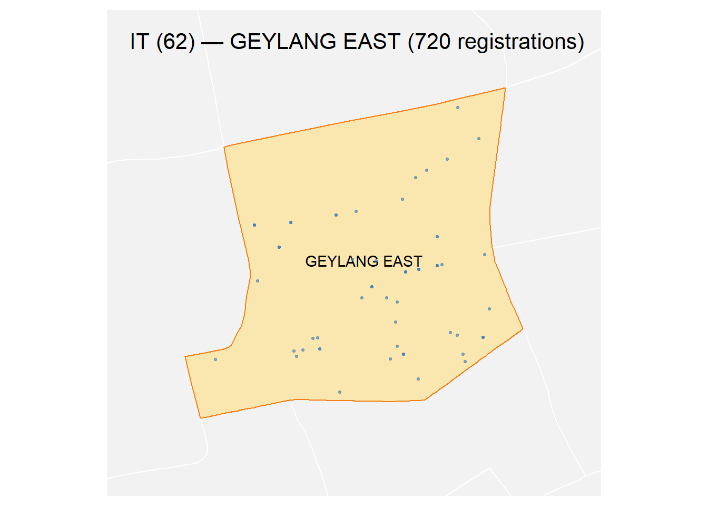
IT (SSIC 62) – Space–time K excess (Fast diagnostics)
Heatmap shows (K_{} - ) for space lag (r) and time lag (u).
The null preserves locations but shuffles times, so any signal indicates space–time interaction beyond the static spatial pattern.
The surface is near zero across most lags, implying timing is largely independent of place at small–moderate scales.
A positive, significant cell appears at ~1.5 km and ~90 days, consistent with quarterly bursts of IT registrations within large office clusters (e.g., CBD, one-north, CBP).
This suggests programme- or lease-driven batch registrations rather than rapid week-to-week imitation.
(FAST run: coarse grid, nsim = 19; used for screening. We complement this with kernel maps and first-order tests.)
res_log <- readRDS("data/rds/stk_env_SG_Logistics_Warehousing__52__ns7_nu3_nsim19.rds")
print(plot_st_heat_tile(res_log, "Logistics (52) — ST-K excess"))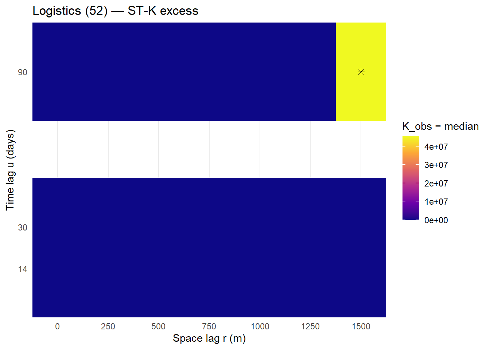
Logistics (52) — ST-K diagnostic This heatmap maps ( K_{obs} - ) over space lags ( r ) and time lags ( u ).
The null holds locations fixed and shuffles dates, so any signal reflects space–time interaction beyond baseline spatial clustering.
Results are flat (≈0) at most scales, indicating that—once we account for industrial-estate geography—the timing of new logistics firms is generally independent of place.
A single positive, significant cell appears at ~1.5 km × ~90 days (✱).
Interpretation: occasional quarterly bursts of registrations within estate-sized catchments (e.g., phased openings, coordinated leases, operator batch filings), rather than rapid, short-range contagion.
Planning takeaway: prioritize estate-level capacity and permitting cycles on a quarterly cadence; short-term reactive measures (≤30 days, ≤750 m) are less relevant for this sector.
7.2 Special look at Suzone Level (Geylang East)
Ripley’s L(r) – r for Subzone Spatial Clustering
This chunk computes and plots Ripley’s L(r) – r for the second most active subzone of a chosen sector (default: IT (62)), to assess within-subzone spatial clustering.
Pick target subzone:
Count points bySUBZONE_Nfor the sector, sort by frequency, and select the 2nd highest (sz2).
This avoids an over-dominant hotspot while still analysing a busy area.Build point pattern in that subzone:
to_ppp_in()converts the subzone polygon to anowinwindow.
- The sector’s points in that subzone are converted to a
pppobjectx.
Choose analysis range:
- Set
rmaxto the smaller of 1200 m or half the subzone diameter (guard against edge artefacts).
- Create
r_seqevery 25 m.
- Set
Compute L-function:
- Use
spatstat.explore::Lest()with Ripley’s correction.
- Build a dataframe with ( L(r) - r ), where 0 indicates CSR (Complete Spatial Randomness).
- Use
Plot:
- Line plot of ( L(r) - r ) vs ( r ) with a dashed 0-line.
- Title includes the sector and subzone.
- Line plot of ( L(r) - r ) vs ( r ) with a dashed 0-line.
# sector to analyse (change if needed), or loop over your `sectors`
sec <- "IT (62)"
# find the 2nd most active subzone for this sector
sz_counts <- biz_pts_use |>
sf::st_drop_geometry() |>
dplyr::filter(sector == sec) |>
dplyr::count(SUBZONE_N, name = "n") |>
dplyr::arrange(dplyr::desc(n))
stopifnot(nrow(sz_counts) >= 2)
sz2 <- sz_counts$SUBZONE_N[2]; n2 <- sz_counts$n[2]
message("Sector: ", sec, " | 2nd subzone: ", sz2, " (n=", n2, ")")
# build ppp in that subzone
to_ppp_in <- function(pts_sf, poly_sf){
Wsz <- spatstat.geom::as.owin(poly_sf)
xy <- sf::st_coordinates(pts_sf)
spatstat.geom::ppp(xy[,1], xy[,2], window = Wsz, check = FALSE)
}
pts_sz <- dplyr::filter(biz_pts_use, sector == sec, SUBZONE_N == sz2)
poly_sz <- dplyr::filter(subzones_use, SUBZONE_N == sz2)
X <- to_ppp_in(pts_sz, poly_sz)
# L(r)-r (cap range to half the subzone diameter, max 1200 m)
rmax <- min(1200, spatstat.geom::diameter.owin(spatstat.geom::Window(X))/2)
r_seq <- seq(0, rmax, by = 25)
L <- spatstat.explore::Lest(X, r = r_seq, correction = "Ripley")
dfL <- as.data.frame(L) |>
dplyr::transmute(r = r, LminusR = iso - r)
ggplot2::ggplot(dfL, ggplot2::aes(r, LminusR)) +
ggplot2::geom_hline(yintercept = 0, linetype = "dashed", linewidth = 0.4) +
ggplot2::geom_line(color = "steelblue", linewidth = 0.8) +
ggplot2::labs(
title = paste0(sec, " — ", sz2, " (2nd most active)"),
subtitle = "Ripley L(r) − r within subzone window",
x = "r (m)", y = "L(r) − r"
) +
ggplot2::theme_minimal()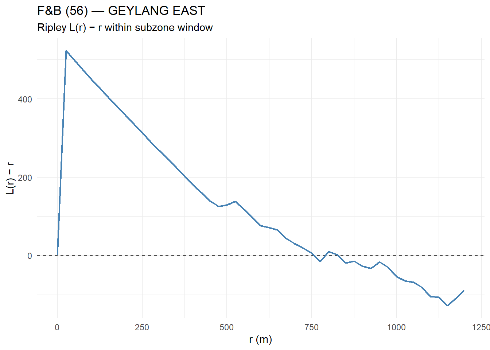
Thematic Map of the 2nd Most Active Subzone (IT 62)
This block creates a thematic map of the 2nd most active subzone for the IT (62) sector, highlighting the subzone polygon and the business registration points inside it.
- Data prep:
pts_sz: all IT registrations within the chosen subzone (sz2).
poly_sz: polygon geometry for that subzone.
bbox_sz: bounding box padded (≈400 m) around the subzone for map spacing.
- Mapping steps with
tmap:- Background: plot all planning subzones (
subzones_use) within the bounding box, filled light grey (grey95) with thin white borders.
- Highlight subzone: overlay the target polygon in light yellow (
#FFE082), semi-transparent, with an orange border (#F57F17). Label withSUBZONE_N.
- Points: overlay all IT registrations (
pts_sz) as small steel-blue dots, semi-transparent for clarity.
- Layout: add a title showing sector, subzone name, and registration count; hide legend; remove frame; fix scaling for a clean appearance.
- Background: plot all planning subzones (
library(tmap)
# Sector + 2nd most active subzone (you already computed sz2)
sec <- "IT (62)"
pts_sz <- dplyr::filter(biz_pts_use, sector == sec, SUBZONE_N == sz2)
poly_sz <- dplyr::filter(subzones_use, SUBZONE_N == sz2)
# a slightly padded bbox so the subzone has breathing room
bbox_sz <- sf::st_bbox(sf::st_buffer(sf::st_as_sfc(sf::st_bbox(poly_sz)), 400))
tmap_mode("plot")
tm_shape(subzones_use, bbox = bbox_sz) +
tm_polygons(col = "grey95", border.col = "white") +
tm_shape(poly_sz) +
tm_polygons(col = "#FFE082", alpha = 0.6, border.col = "#F57F17", lwd = 1.2) +
tm_text("SUBZONE_N", size = 0.9, col = "black", auto.placement = TRUE) + # <-- on polygon
tm_shape(pts_sz) +
tm_dots(col = "steelblue", size = 0.2, alpha = 0.55) +
tm_layout(
title = sprintf("%s — %s (%d registrations)", sec, sz2, nrow(pts_sz)),
legend.show = FALSE, frame = FALSE, component.autoscale = FALSE
)
The L(r) − r curve is strongly above 0 at short distances, peaking within ~50–250 m, then declines and crosses 0 around ~850 m. Interpretation: IT registrations are clustered at block–neighbourhood scales (tens to a few hundred metres). Beyond ~0.8 km the pattern is no longer more clustered than CSR; the slight negatives likely reflect edge effects/land-use gaps rather than true repulsion.
The map shows many points concentrated within the subzone, forming several tight mini-clusters rather than a uniform spread—consistent with co-location in business buildings, coworking floors, or along commercial corridors.
Planning takeaway: support small-footprint, flexible office space and amenities within walkable (≤800 m) catchments; monitoring should focus on these local nodes rather than wider-area interventions.
For other sectors This code defines reusable helpers to analyze and visualize business clustering within a chosen subzone. plot_Lr_for_subzone() builds a point pattern inside the subzone and plots Ripley’s L(r) − r to assess clustering vs. CSR, while map_sector_subzone() produces a clean thematic map highlighting the subzone and its business registration points.
# build ppp inside a subzone polygon
to_ppp_in <- function(pts_sf, poly_sf){
Wsz <- spatstat.geom::as.owin(poly_sf)
xy <- sf::st_coordinates(pts_sf)
spatstat.geom::ppp(xy[,1], xy[,2], window = Wsz, check = FALSE)
}
# L(r) - r plot inside a subzone
plot_Lr_for_subzone <- function(sec, sz_name, by = 25, r_cap = 1200){
pts_sz <- dplyr::filter(biz_pts_use, sector == sec, SUBZONE_N == sz_name)
poly_sz <- dplyr::filter(subzones_use, SUBZONE_N == sz_name)
stopifnot(nrow(poly_sz) == 1, nrow(pts_sz) > 0)
X <- to_ppp_in(pts_sz, poly_sz)
rmax <- min(r_cap, spatstat.geom::diameter.owin(spatstat.geom::Window(X))/2)
L <- spatstat.explore::Lest(X, r = seq(0, rmax, by = by), correction = "Ripley")
dfL <- as.data.frame(L) |> dplyr::transmute(r = r, LminusR = iso - r)
ggplot2::ggplot(dfL, ggplot2::aes(r, LminusR)) +
ggplot2::geom_hline(yintercept = 0, linetype = "dashed", linewidth = 0.4) +
ggplot2::geom_line(color = "steelblue", linewidth = 0.8) +
ggplot2::labs(
title = sprintf("%s — %s", sec, sz_name),
subtitle = "Ripley L(r) − r within subzone window",
x = "r (m)", y = "L(r) − r"
) +
ggplot2::theme_minimal()
}
# clean subzone map with points
map_sector_subzone <- function(sec, sz_name){
pts_sz <- dplyr::filter(biz_pts_use, sector == sec, SUBZONE_N == sz_name)
poly_sz <- dplyr::filter(subzones_use, SUBZONE_N == sz_name)
bbox_sz <- sf::st_bbox(sf::st_buffer(sf::st_as_sfc(sf::st_bbox(poly_sz)), 400))
tmap_mode("plot")
tm_shape(subzones_use, bbox = bbox_sz) + tm_polygons(col = "grey95", border.col = "white") +
tm_shape(poly_sz) + tm_polygons(col = "#FFE082", alpha = 0.6, border.col = "#F57F17", lwd = 1.2) +
tm_text("SUBZONE_N", size = 0.9, col = "black", auto.placement = TRUE) +
tm_shape(pts_sz) + tm_dots(col = "steelblue", size = 0.2, alpha = 0.55) +
tm_layout(
title = sprintf("%s — %s (%d registrations)", sec, sz_name, nrow(pts_sz)),
legend.show = FALSE, frame = FALSE, component.autoscale = FALSE
)
}sz_name <- "GEYLANG EAST"
# F&B (56)
print(plot_Lr_for_subzone("F&B (56)", sz_name))
print(map_sector_subzone("F&B (56)", sz_name))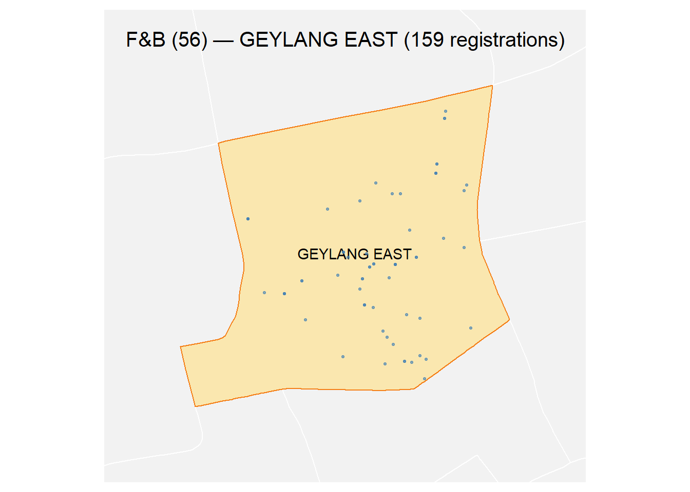
F&B (56) — Geylang East (subzone)
The subzone K-function ( L(r) - r ) is strongly positive from 0–~750 m, peaking at very short ranges (tens of metres) and tapering steadily.
This means new F&B registrations are clustered at block–neighbourhood scales, consistent with mall/market streets and MRT-proximate shopfronts.
The curve crosses ~0 around 0.75–0.8 km, indicating that beyond this radius the pattern is no more clustered than random within the subzone.
The mild negative tail after ~900–1100 m is typical of edge effects as distances approach the subzone’s diameter, not true repulsion. The map corroborates several micro-clusters spread across GEYLANG EAST rather than a single node.
Planning note: street-management and licensing hotspots are likely within ≤500–800 m corridors; improvements to pedestrian flow and cleaning/enforcement should prioritise these clusters.
# Logistics/Warehousing (52)
print(plot_Lr_for_subzone("Logistics/Warehousing (52)", sz_name))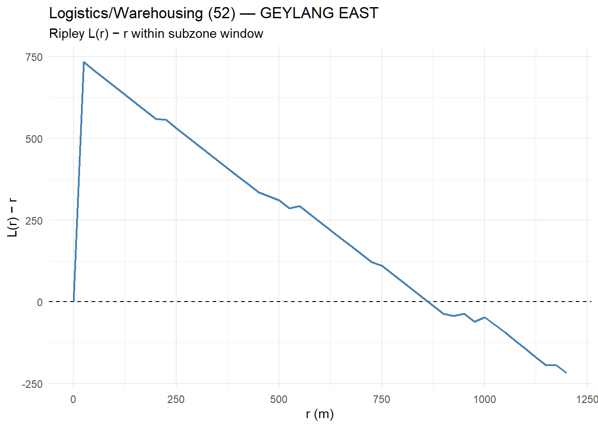
print(map_sector_subzone("Logistics/Warehousing (52)", sz_name))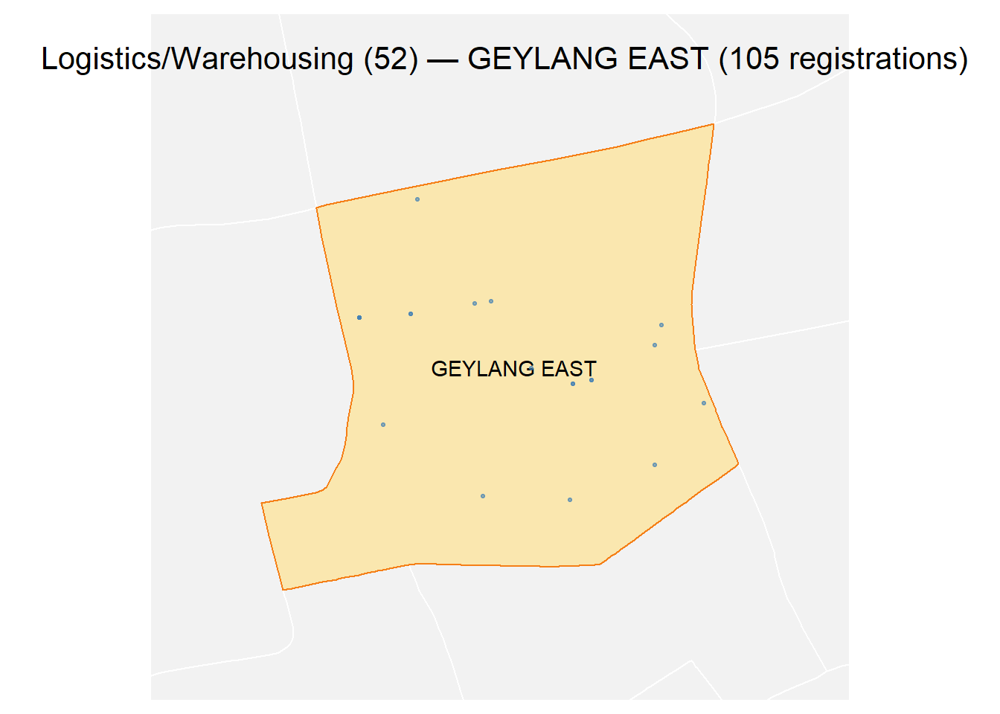
Ripley’s ( L(r) - r ) inside the subzone is strongly positive at very small radii (peak < 50 m), meaning registrations tend to co-locate in the same or adjacent buildings—typical of multi-tenant warehouses or repeated use of a few addresses.
The curve declines steadily and crosses ~0 at ~0.85–0.9 km, then becomes negative out to ~1.2 km, indicating spacing between clusters at estate scale (i.e., once you move ~1 km away, new firms are less likely than random to appear there, given the subzone window).
The dot map (≈105 registrations) shows few, tight nodes along main corridors and very little presence elsewhere, consistent with zoning and frontage access needs.
Planning takeaways:
- Focus servicing/curb and loading management around those micro-clusters.
- Preserve small-parcel/strata industrial supply.
- Interpret cautiously since registrations may reflect office/registered addresses rather than operational sites.
8 Final Planning Summary
New business registrations in Singapore during 2025-H1 (with 2024 as baseline) reveal distinct spatial logics by sector and common temporal rhythms that matter for planning, infrastructure and place management. F&B (SSIC 56) exhibits an island-wide footprint with dense, walk-scale clusters in the CBD/fringe-CBD and town-centre/MRT nodes. KDE peaks around transit-rich malls and mixed-use corridors; subzone L(r)–r curves are positive up to ~750–800 m, indicating neighbourhood-scale agglomeration. Policy levers here are placemaking and curb/servicing management rather than land-supply: concentrate cleaning, licensing and pedestrian flow improvements in ≤800 m corridors around the highest-intensity nodes; monitor saturation to avoid nuisance spillovers into residential streets.
IT services (SSIC 62) are both widely dispersed and highly concentrated at a few office ecosystems—CBD, one-north, Changi Business Park, Tampines/Jurong regional hubs. The nearest-neighbour test shows the strongest clustering among the three sectors, consistent with co-location in towers, business parks and coworking floors. Yet the space–time K surfaces are largely flat at short lags, with significance appearing at ~1.5 km / ~90 days, suggesting quarterly, estate-scale bursts (lease cycles, batch incorporations) rather than week-to-week contagion. Planning actions: ensure flexible office stock and grade-A to flexible B1 spaces near rapid transit; streamline fit-out and data/telecom permitting on a quarterly cadence; and enhance last-mile public transport between parks and MRT to widen the catchment of talent and services.
Logistics/Warehousing (SSIC 52) is sparse but decisive, tracking industrial corridors and gateways (Jurong/Tuas, port-proximity zones, and the Changi axis). KDE shows a long-tailed distribution: large low-intensity background with few, very high-intensity estate nodes. Subzone L(r)–r indicates micro-co-location (<50 m peaks) inside multi-tenant warehouses and a decline beyond ~0.85–0.9 km, implying estate-scale spacing. Space–time K again flags quarter-year pulses at ~1.5 km, consistent with phased openings and coordinated leases. Implications: preserve a pipeline of industrial parcels with good expressway access, protect loading/servicing capacity, and manage last-mile interfaces where estates abut residential areas (noise, heavy-vehicle routing, staging).
Cross-cutting, three themes emerge. First, registered-office effects inflate CBD counts; planners should triangulate KDE hotspots with operational land-use (e.g., mall/food clusters vs. office-mailing addresses) to calibrate interventions. Second, the space–time signal at ~quarterly intervals argues for batch-oriented permitting and monitoring—monthly dashboards are useful but quarterly capacity checks better match market rhythm. Third, transit adjacency consistently underpins intensity across sectors: prioritising walkability and MRT connectivity around mixed-use hubs yields the broadest spillovers (jobs, services, footfall).
In short, F&B needs fine-grain, street-scale management; IT requires flexible, transit-served office ecosystems; and Logistics depends on protected industrial estates with robust access. Aligning licensing, infrastructure, and space supply to these scales—and reviewing them on a quarterly cycle—will sustain growth while mitigating over-concentration risks.